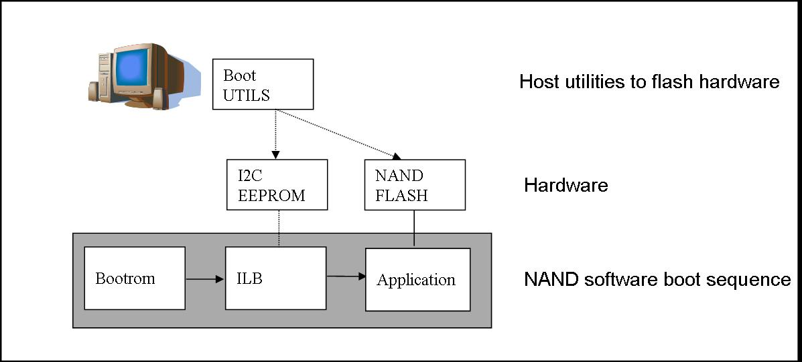
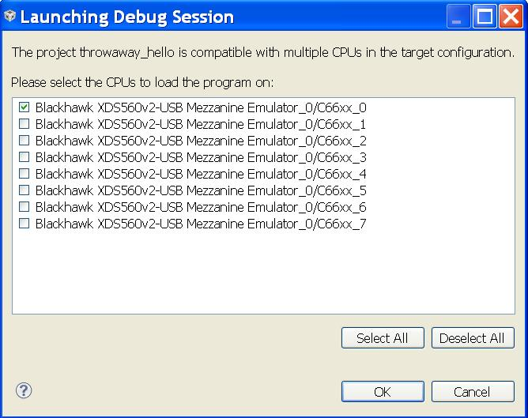
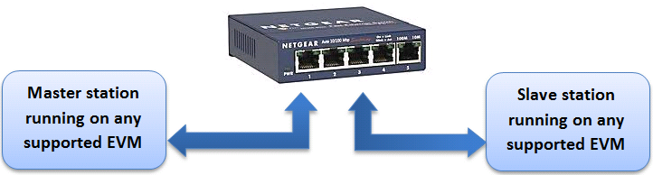

4.3. FC¶
4.4. IPC¶
IPC technical documents links
| Links | Description |
|---|---|
| IPC User’s Guide | TI IPC User’s Guide |
4.4.1. IPC Examples¶
4.4.1.1. IPC RTOS Examples¶
IPC Examples with ARM Host running TI-RTOS
The IPC package includes examples for the use-case with both the Host and slave cores running TI-RTOS. They can be built from the Processor SDK RTOS package.
Note
To Install RTOS Proc SDK, please follow the instructions in the RTOS SDK Getting Started Guide
In the RTOS Processor SDK, the ipc examples are located under <RTOS_SDK_INSTALL_DIR>/processor_sdk_rtos_<platform>_x_xx_xx_xx/ipc_<version>/examples/<platform>_bios_elf.
Once the RTOS Processor SDK is installed at the default location, the IPC examples can be built with the following commands:
Change to Processor SDK RTOS directory
$ cd <RTOS_SDK_INSTALL_DIR>/processor_sdk_rtos_<platform>_x_xx_xx_xx
Start the top level build:
$ make ipc_examples
4.6. Boot¶
4.6.1. Overview¶
This page provides an overview about the Secondary Bootloader support provided in Processor SDK RTOS.
The Secondary Bootloader (SBL) sets-up the PLL clocks, powers on the I/O Peripherals, initializes the DDR, loads the application image into DDR & brings the slave cores for applicable SOCs out of reset. Additional details including execution boot flow is covered in more elaborate detail under individual SOC section.
4.6.2. Boot Modes¶
4.6.2.1. MMCSD¶
MMCSD bootloader is required to boot target using an SD card containing bootloader and application images. When the board is powered ON the ROM bootloader detects the MMCSD bootloader image and loads it to the internal memory.The bootloader initializes the board, copies the application image from SD card to the DDR memory and gives control to the application.
4.6.2.2. QSPI¶
A flash device interfaced with QSPI is flashed with QSPI bootloader and application images. When the board is powered ON the ROM bootloader detects the bootloader image from flash device and loads it to the internal memory. The Bootloader initializes the board, copies the application image from QSPI device to the DDR memory and gives control to the application.
4.6.2.3. UART¶
A Serial connection is used for transferring the bootloader binary from PC to target board through XMODEM protocol. The bootloader on execution prompts for application image to transfer through XMODEM. On providing the path, the application binary is transferred through serial connection to DDR memory and the control is passed to application to execute.
4.6.2.4. MCSPI/SPI¶
A SPI flash device flashed with MCSPI/SPI bootloader and application images is used for booting the board. When the board is powered ON the ROM bootloader detects the bootloader image from flash device and loads it to the internal memory. The Bootloader initializes the board, copies the application image from flash to the DDR memory and gives control to the application.
4.6.2.5. NAND¶
NAND flash with bootloader and and application images is used for booting the board. When the board is powered ON the ROM bootloader detects the bootloader image from flash device and loads it to the internal memory. The bootloader initializes the board, copies the application image from flash to the DDR memory and gives control to the application.
Note
For information on boot mode setting, see the applicable EVM Hardware User Guide
4.6.3. Platforms¶
4.6.3.1. AM335x/AM437x¶
4.6.3.1.1. Overview¶
Bootloader supports power-on-reset bootstraps for the board. It initializes board, loads application from the memory device to DDR and transfers control to application. Section provides additional details including flashing and booting instructions across different media.
4.6.3.1.2. Source Reference¶
< BASE_DIR = PDK_INSTALL_DIR\packages\ti\starterware>
4.6.3.1.2.1. Bootloader build files for AM335x/AM437x¶
Source files:
- BASE_DIRbootloadersrc: Common source files for bootloader functionality
- BASE_DIRbootloadersrc<device>: Files specific to device to initialize platform features like PLL, pinmux and DDR
Build Files:
- BASE_DIR/build/makerules/rules_a8.mk: Common Compiler flags used for A8 cores. Applies to AMIC110 and AM335x
- BASE_DIR/build/makerules/rules_a8.mk: Common Compiler flags used for A9 cores. Applies to AM437x devices
- BASE_DIR/build/makerules/platform.mk: Global settings for all components for a particular platform.
- BASE_DIR/build/makerules/components.mk: Specific settings for components in starterware
- BASE_DIR/build/makerules/build_cfg.mk: Flags to enable features in the build
- BASE_DIR/bootloader/Makefile: Makefile for bootloader that provides list of source files and library to create bootloader binary.
Boot and flashing tools:
- BASE_DIR/tools Contains tools to create boot images and flashing tools to program the boot binary on the boot media.
4.6.3.1.3. Bootloader execution sequence¶
The Processor SDK RTOS boot loader uses a two stage boot process. The different stages of the application boot sequence using Processor SDK RTOS bootloader are shown below:
4.6.3.1.3.1. Boot Sequence¶
- Power on Reset
- ROM Bootloader (RBL)
- Platform configuration and initialization.
- DPLL and clock settings for MPU, I2C, MMCSD, USB, SPI, QSPI, Ethernet etc.
- Checks Sysboot pins and choose booting device
- If no valid bootloader found on booting device, RBL checks for next booting device. The sequence depends on RBL execution flow and Sysboot pins.
- RBL gets image size and load address by checking TI Image Header appended on bootloader binary(.bin). Check binary formats.
- Loads the binary to internal OCMC memory at the Load address fetched from TI Image Header
- Passes control to Secondary Bootloader(SBL)
- Platform configuration and initialization.
- Secondary Bootloader(SBL)
- Configure PLL and Initialize DDR
- Configure PRCM and PinMux for Boot Peripherals
- Copies application image to DDR
- Passes execution control to Application
- Application execution
4.6.3.1.4. Tools and Binary formats¶
| Binary format | Requirement | Details |
| .bin | QSPI bootloader, UART bootloader and app |
QSPI bootloader binary should in .bin format and Application binary should be in _ti.bin format. UART bootloader and applications are loaded in .bin format through XMODEM in terminal. |
| _ti.bin | MMCSD bootloader and app, NAND bootloader and app, MCSPI boot loader and app, QSPI app. |
.bin binaries are converted to _ti.bin format by adding Image size(4bytes) and Image load address(4bytes) as image header. Refer to Image format section in Initialization chapter of AM437x TRM MMCSD, NAND and MCSPI boot loaders and application binaries should be appended with ti image header. |
TI Boot image
| Offset | Binary value |
|---|---|
| 0x00000000 | Size |
| 0x00000004 | Entry Point (Location) |
| 0x00000008 | Binary (.bin) |
Note
- For bootloader Entry point is usually 0x402f0000
- For the app the entry point is usually 0x80000000.
4.6.3.1.4.1. Binary format conversion procedure¶
4.6.3.1.4.1.1. Binary format conversion in Linux¶
- To convert from .out -> .bin
TOOLCHAIN_PATH_<A8/A9>/bin/arm-none-eabi-objcopy -O binary <application>.out <application>.bin
- Build tiimage.out. Go to starterware/tools/ti_image/
gcc tiimage.c –o tiimage.out
- To convert from .bin -> _ti.bin
tiimage.out <Image Load Address> NONE <application>.bin <application>_ti.bin
4.6.3.1.4.1.2. Binary format conversion in Windows¶
- To convert from .out -> .bin
TOOLCHAIN_PATH_<A8/A9>/bin/arm-none-eabi-objcopy -O binary <application>.out <application>.bin
2) To convert from .bin -> _ti.bin. tiimage.exe is provided as prebuilt binary in starterware/tools/ti_image.
tiimage.exe <Image Load Address> NONE <application>.bin <application>_ti.bin
4.6.3.1.5. Boot Modes supported¶
Following are the Boot Modes supported through AM335x/AM437x bootloader for the various EVMs.
| MMCSD | NAND | McSPI | QSPI | UART | |
| AM335x GPEVM | YES | YES | YES | NO | YES |
| AM335x ICEv2 | YES | NO | YES | NO | NO |
| AM335x StarterKi t | YES | NO | NO | NO | YES |
| AM335x BeagleBon eBlack | YES | NO | NO | NO | YES |
| AM437x GPEVM | YES | NO | NO | NO | YES |
| AM437x IDK | YES | NO | NO | YES | NO |
| AM437x StarterKi t | YES | NO | NO | NO | NO |
4.6.3.1.6. Building the Bootloader¶
- Pre-requisite: Setup SDK build environment as described in article
- Setup_Environment
Normal Operation of Bootloader:
Bootloading an application from flash into DDR memory as in case of TI evaluation platforms is described as normal operation mode for the bootloader. This is the default behaviour of the bootloader and can be built using the following command in starterware.
gmake bootloader BUILDCFG=boot BOOTMODE=<BOOT_MODE> PLATFORM=<EVM> PROFILE=<BUILD_PROFILE> -s KW_BUILD=no
- BOOT_MODE: mcspi, nand, qspi, mmcsd, uart (Check supported boot modes for your evaluation platform)
- EVM: am335x-evm, am43xx-evm, amic110-ddrless
- BUILD_PROFILE: debug, release
Additional Build options (currently support only for AMIC110/AM335x ICE Users)
- DDR less Application boot setup
gmake bootloader BUILDCFG=boot BOOTMODE=mcspi PLATFORM=amic110-ddrless PROFILE=debug -s KW_BUILD=no USE_DDR=no
gmake bootloader BUILDCFG=boot BOOTMODE=mcspi PLATFORM=amic110-ddrless PROFILE=release -s KW_BUILD=no USE_DDR=no
This option builds an ultra light weight (<10 KB) bootloader for cost optimized application that don`t external DDR memory.
- PRU/ICSS Enable in SBL
gmake bootloader BUILDCFG=boot BOOTMODE=mcspi PLATFORM=am335x-evm PROFILE=debug -s KW_BUILD=no ENABLE_PRU=yes
gmake bootloader BUILDCFG=boot BOOTMODE=mcspi PLATFORM=am335x-evm PROFILE=release -s KW_BUILD=no ENABLE_PRU=yes
This feature is required in application that need to quick wake up of ICSS/PRU cores. The PRU cores can be woken up and loaded from the SBL by combining the ENABLE_PRU and BIN_LOAD arguments.
- Load additional binaries from flash
gmake bootloader BUILDCFG=boot BOOTMODE=mcspi PLATFORM=am335x-evm PROFILE=debug -s KW_BUILD=no BIN_LOAD=yes
gmake bootloader BUILDCFG=boot BOOTMODE=mcspi PLATFORM=am335x-evm PROFILE=release -s KW_BUILD=no BIN_LOAD=yes
The location of binaries in offset is configured using sbl_flash_offset_cfg.h in the bootloader source. Users are required to use TIIMAGE tool to append an header to the binary so that the bootloader knows the loction and size of the binary to be loaded.
Industrial DDRless Booting
The AMIC110 DDRLESS platform provides a superset flag to enable all the above features and build the bootloader . The superset build is invoked using BUILD_ICSS_DDRLESS_BOOT=yes as shown below:
gmake bootloader BUILDCFG=boot BOOTMODE=mcspi PLATFORM=amic110-ddrless PROFILE=debug -s KW_BUILD=no BUILD_ICSS_DDRLESS_BOOT=yes
gmake bootloader BUILDCFG=boot BOOTMODE=mcspi PLATFORM=amic110-ddrless PROFILE=release -s KW_BUILD=no BUILD_ICSS_DDRLESS_BOOT=yes
Prebuilt binaries inside the Processor SDK RTOS for AMIC110-DDRLESS will be configured using this option to allow for testing of cost optimized industrial use case.
4.6.3.1.7. Boot Mode settings¶
Boot mode settings for all supported AM335x and AM437x boards are here
4.6.3.1.8. Boot Modes¶
4.6.3.1.8.1. Booting Via SD Card¶
Booting from SD Card involves two steps.
- Preparing SD card.
- Booting target.
4.6.3.1.8.1.1. Preparing SD card¶
- To boot target the SD card should be bootable. Follow the steps at Creating bootable SD card in windows or Creating bootable SD card in Linux.
- Delete the “MLO” and “app” in the bootable SD card which are created in the process of making the SD bootable.
- Bootloader images with ti header (<mmcsd_bootloader>_ti.bin)should be renamed to “MLO”. Bootloader images are located at <PDK_INSTALL_DIRpackagestistarterwarestarterwarebinarybootloaderbin<TargetType>
- Similarly the converted application binary image has to be renamed to “app” from “<app_name>_ti.bin“
- Copy both the boot loader image “MLO” and the application image “app” to the SD card.
- The SD card is ready for use on target.
4.6.3.1.8.1.2. Booting target¶
- Insert SD card to the base board SD slot. Connect a UART cable to a host running a serial terminal application (teraterm/hyperterminal) with 115200 baud, 8bit, No parity and 1 STOP bit configuration.
- Configure the board for SD Boot mode
- SD instance 0 (on base board) is available in all profiles.
- SD instance 0 boot mode needs to appropriately set. For SD boot to be selected first, SD boot should appear first in the boot device list in the boot mode. If any other boot mode is selected, even if a SD boot card is inserted, and does not appear first in the list, the first available sane boot image (like NAND or SPI etc) is booted and SD is not selected. Only if no sane boot image is found in the first devices, SD boot image will be selected.
- Once SD boot image is chosen, the MLO is first detected and copied and executed from the OCMC0 RAM. The MLO then copies the application image (app) from the card to the SDRAM and passes the control to the application. If the process is succesful, messages identifying board and SoC will appear on the serial console.
After this the application will take control and execute.
NOTE: If board have BootMode selection pins choose proper Boot Selection pins from hardware reference manuals.
4.6.3.1.8.2. Booting Via QSPI¶
Booting from QSPI flash involves two steps-
- Preparing Flash Device
- Booting target.
4.6.3.1.8.2.1. Preparing Flash Device¶
Procedure relies on contents being copied to SD card. Additional details below:
- Copy bootloader image(bootloader_boot_qspi_a9host_debug.bin rename) and app image(“<app_name>_ti.bin”) into the SD card. The file names have to be renamed in such a way that the length of name is less than 9 characters. Any file name less than 9 characters can be used. Rename the bootloader file to ‘boot’ and application image to ‘app’ with no extensions.
- Copy the ‘config’ file into the SD card which will contain the names of the image to be flashed and the offset. A sample config file can be found at <PDK_INSTALL_DIRpackagestistarterwarestarterwaretoolsqspiconfig> directory. Do not change name of the config file. NOTE: “config” file can be used without any modifications if bootloader and application images are renamed to “boot” and “app”. NOTE: Do not rename bootloader to be copied to SD card as “MLO”, as MMCSD bootloader expects “MLO” and “app” to boot.
- Now SD card contains 1)boot 2)app 3)config files. config file contains the address of boot image as 0x0 and app image as 0x80000. Insert it into the SD card slot.
- Connect the board with CCS and load the prebuilt qspi flash writer application from <PDK_INSTALL_DIRpackagestistarterwarestarterwarebinaryqspi_app_flash_writerbinm43xx-evm>
- Run the QSPI flash writer application. Following logs expected on console.
StarterWare QSPI Flash Writer!!
BOARDInit status [0x0]
SoC : [AM43XX]
Core : [A9]
Board Detected : [IDKEVM]
Base Board Revision : [UNKNOWN]
Daughter Card Revision: [UNKNOWN]
Copying boot to QSPI Flash
Copying app to QSPI Flash
Changing read to quad mode
Read mode has been changed to Quad mode
SUCCESS!!!
Flashing completed
4.6.3.1.8.2.2. Booting the target.¶
- Connect UART cable to a host running serial terminal application (teraterm/hyperterminal) with 115200 baud, 8bit, No parity and 1 STOP bit configuration.
- After flashing successfully remove SD card and reboot to see following logs
StarterWare Boot Loader
BOARDInit status [0x0]
SoC : [AM43XX]
Core : [A9]
Board Detected : [IDKEVM]
Base Board Revision : [UNKNOWN]
Daughter Card Revision: [UNKNOWN]
Copying Header of the application image
Copying image from flash to DDR
Jumping to StarterWare Application...
NOTE: Boot logs will appear approximately after 25 seconds on reset.
NOTE:If there is no boot mode selection present on board, boot image will be loaded depending on ROM boot sequence
Example: If QSPI flash and MMCSD has valid bootloaders, on reset MMCSD boot image will be loaded following ROM Boot sequence.
4.6.3.1.8.3. Booting Via UART¶
ROM and Bootloader supports XMODEM protocol with images being binary not requiring any additional headers. Following are steps for boot:
- Configure board for UART boot mode :
UART boot need to be first in the boot device list. Note: In case if
any other boot mode is selected, the first available boot image
(eg:NAND or MMCSD etc) will override. In case of no valid images,
UART boot will be selected.
- Select View->Memory Browser through CCS.
- Select address 0x44e10040.
- Write 0x19 to last 2 bytes of this memory address.(UART boot)
- Soft reset the board. This is a volatile bit which gets reset after power on.
- ROM code will print “CC..” on UART console expecting Bootloader via XMODEM. File can be sent via xmodem through tera-term File-> Transfer -> XMODEM -> Send.
- On transmitting bootloader image, bootloader_boot_uart_a9host_debug.bin via XMODEM, following message will be expected on serial console.
CCCCCCCCCCCCCCCCCCCCCCCCCCCC
StarterWare Boot Loader
BOARDInit status [0x0]
SoC : [AM43XX]
Core : [A9]
Board Detected : [IDKEVM]
Base Board Revision : [UNKNOWN]
Daughter Card Revision: [UNKNOWN]
GPIO Instance number: 0
Pin number: 22
Please transfer file:
CCCCCCCCCCCCCCCCCCCCCCCCCCCCCCCCCC
4. As a next step application binary (without header) can be sent via XMODEM which will lead to application start executing.
4.6.3.1.8.4. Booting Via McSPI¶
Booting from McSPI involves two steps.
- Preparing Flash Device
- Booting the target.
Preparing Flash Device
- Set the appropriate bootmode if applicable for EVM.Refer Boot mode settings. Note: Most of the boards may not have switch settings.
- Add a required target configuration in CCS depending on emulator and board connected.
- Connect target to required core. Ex: A8.
- Load the flash writer from <PDK_INSTALL_DIRpackagestistarterwarestarterwaretoolsflash_writerspi_flash_writer_AM335X.out onto the EVM.
- Run the application and observe the logs on CCS console.
Starting SPIWriter.
Choose Operation:
Enter 1 ----> To FLASH an Image
Enter 2 ----> To ERASE Flash
Enter 3 ----> To EXIT
- When Flash option is chosen program prompts to enter file name.
Enter the File Name
- Provide the complete path of file bootloader_boot_mcspi_a8host_release_ti.bin at directory “binary/bootloader/bin/<PLATFORM>/<gcc/ccs>/” and hit Enter.
Enter the Offset in bytes (in HEX)
- Provide 0x00000 to flash bootloader.
- To flash application binary image <app_name>_a8host_ti.bin, provide 0x20000.
- Wait for few miniuits as flashing is a slower process.
Erasing flash at byte offset: xx, byte length: xxxx
SF: Successfully erased xxxx bytes @ xxxx
Writing flash at page offset: x, number of pages: xxxx
Flashing is in progress...
Verifying... Success.
- Once SPI flash writing completes disconnect target.
Booting the target
- Connect a serial cable to a host running a serial terminal application (teraterm/hyperterminal) with 115200 baud, 8bit, No parity and 1 STOP bit configuration.
- Configure the board for SPI boot mode.
- On reset, ROM bootloder copies the bootloader from flash to internal memory. The bootloader then copies the application image from flash to DDR and passes the control to the application.
4.6.3.1.8.5. Booting Via NAND¶
Booting from NAND involves two steps.
- Preparing Flash Device
- Booting the target.
Preparing Flash Device
- Configure BOOT pins for NAND Boot mode settings
- Connect target with CCS.
- Load the <PDK_INSTALL_DIRpackagestistarterwarestarterwaretoolsflash_writernand_flash_writer_AM335X.out> to target and Run. Flash writer will output messages to CCS console. When it prompts for inputs, proper inputs shall be given via CCS console.
- When prompted for binary file name, update file with proper path.
- Select option for flashing.
Choose your operation
Enter 1 ---> To Flash an Image
Enter 2 ---> To ERASE the whole NAND
Enter 3 ---> To EXIT
- If Option 1 is selected, enter image path to flash when prompted as shown below.
Enter image file path
Provide the complete path (e.g. <PDK_INSTALL_DIRpackagestistarterwarestarterwarebinarybootloaderbin<am335x/am437x-evm><compiler>bootloader_boot_nand_a8host_<debug/release>_ti.bin)
- Enter offset when prompted as shown below.
Enter offset (in hex):
- Use hex format
- If bootloader is to be flashed, provide 0x00000. For application binary, provide 0x80000.
- Select ECC for flashing.
Choose the ECC scheme from given options
Enter 1 ---> BCH 8 bit
Enter 2 ---> HAM
Enter 3 ---> T0 EXIT
Please enter ECC scheme type:
Always select BCH8 for bootloader and application as ROM code and bootloader uses the BCH8 ECC scheme.
- Ensure that flash info displayed by tool matches NAND flash in EVM.
- After this tool should first erase the required region in flash and then start flashing new image.
- If flashing procedure is complete following message should be displayed.
Application is successfully flashed
NAND flashing successful!
- Once NAND flash writing completes, disconnect from CCS.
Booting the target
- Connect a UART cable to a host running a serial terminal application (teraterm/hyperterminal) with 115200 baud, 8bit, No parity and 1 STOP bit configuration.
- Configure the board for NAND boot mode. Refer Boot mode settings
- On reset, ROM detects bootloader from NAND and copies it to internal memory. Bootloader then copies application image from the NAND to DDR and passes control to application. If the process is succesful, following messages appear in serial console.
StarterWare Boot Loader
BOARDInit status [0x0]
SoC : [AM335X]
Core : [A8]
Board Detected : [GPEVM]
Base Board Revision : [1.5]
Daughter Card Revision: [UNKNOWN]
NAND flash is connected to GPMC on this board
Jumping to StarterWare Application...
After this application should take control and execute.
4.6.3.1.9. Test Application¶
The section explains steps for building and booting a sample pdk application for am335x or am437x using MMCSD bootloader.
4.6.3.1.9.1. Test Application Image Creation¶
Follow below steps to generate the bootable application image.
- Generate .out files using steps for Rebuilding PDK. Locate .out file in directory <PDK_INSTALL_PATH/MyExampleProjects/<ExampleProjectDirectory>/Debug>
- Convert files to support MMCSD boot using steps as per Binary format conversion procedure.
- Rename generated <Application>_ti.bin to “app”.
4.6.3.1.9.2. Loading Test application¶
Follow procedure to use “app” file as per section Booting Via SD Card.
4.6.3.1.10. Usage Notes¶
- Bootloader Memory map
The bootloader code runs from internal OCMC memory and occupies certain amount of OCMC memory that is not available for application to use during booting.
Refer to the map file for the boot loader to check for latest information on the memory utilization in the boot loader.
Location of linker command file:
BASE_DIR\binary\bootloader\bin\<platform>\gcc
After SBL execution is complete, this region can be used as per application requirement.
- Configuring entry point for SBL
The three files that help setup the entry point in the bootloader build are “PDK_INSTALL_PATHpackagestistarterwaresocarmv7agccsbl_init.S” and the linker command file “PDK_INSTALL_PATHpackagestistarterwareexamplesgcc<device>_boot.lds”. The global symbol Entry is used to provide the entry point to the bootloader. The Base address of the memory section OCMCRAM (starts at 1K offset in OCMC RAM as defined in TRM) is then used by the tiimage or GPHEader tool to provide RBL the guidance to find the entry point to pass control. After MLO is created check the TI image format file( _ti.bin) to confirm that the entry point matches the location of Entry symbol in the .map file.
Note
The object file created by sbl_init.S should always be the first object file in the link order for the symbol Entry to be placed at the BASE address of the memory section SBL_MEM
- Boot image creation tools generates a large boot image if load sections are fragmented
Please note that when using objcopy the compiler generates a contiguous binary that gets loaded by the bootloader at the location specified in the header appended by TIIMAGE boot utility. IF you have some code sections in OCMC or SRAM and some section in DDR the compiler will generates a binary that spans across full memory range which would be in order of MB or even GB size so it is recommended that you create compact binaries that can be loaded into memory or implement a ELF parser to bootloader memory sections that may be fragmented in the address space. you can also load separate binaries for OCMC sections and DDR memory and load the sections separately
- Removing Heap section from application binary to speed up boot times
A common issue reported with the ARM GCC compiler is that it appends Heap section associated with the binary to the binary image used to boot. The Heap section is usually filled with zeros so can cause significant delay in boot times. Essentially the bootloader will be writing a bunch of zeros in memory so is inefficient. Following work around has been used to circumvent the issue
Option 1: Eliminate the heap by using the compiler option “–remove-section” as described in the E2E post below:
Refer: E2E post to configure Heap in ARM application binary by adding “–remove-section”
Example BIOS configuration:
var heap1 = HeapMem.create();
heap1.size = 256 * 1024 * 1024;
heap1.sectionName = ".stack";
Memory.defaultHeapInstance = heap1;
Compiler Setting : –remove-section=.stack
Option 2 Configure Segment type to be “NO LOAD” in .cfg and use excludeSections
SYSBIOS Memory map configurations allows user to specify the section name, length and type. by configuring the section type to “NOLOAD” and using excludeSection option the heap memory can be eliminated from the final binary.
Example BIOS configuration:
Program.sectMap[".biosheap"] = new Program.SectionSpec();
Program.sectMap[".biosheap"].runSegment = "DDR2"
Program.sectMap[".biosheap"].type = "NOLOAD";
Program.sectionsExclude = ".biosheap"
Alternate approach using linker command file:
.ddr3Heap (NOLOAD):
{
*(.ddr3Heap)
} > HOST_DDR3
Note
The approach described above helps improve boot times but Users are recommended to initialize the HEAP sections to zeros post boot during initialization to avoid any undesired behavior during normal operation of the app
4.6.3.1.11. Debugging application boot¶
Steps to debug application boot using Processor SDK RTOS bootloader are discussed in the article `Common steps to debug application boot <index_Foundational_Components.html#common-steps-to-debug-application-boot>`__
4.6.3.2. AM57x¶
4.6.3.2.1. Overview¶
The Secondary Bootloader (SBL) for AM57xx device initializes the execution environment for multi-core application and this can be used to demonstrate an out-of-box experience.The section covers additional details including execution sequence, tools and additional flashing instructions.
4.6.3.2.2. Bootloader Execution Sequence¶
- Power On Reset
- ROM Bootloader (RBL)
- Software pre-programmed in ROM memory starts executing
- Checks Sysboot pins and choose booting device
- If no valid bootloader found on booting device, RBL checks for next booting device.
- Platform configuration and initialization.
- Configures DPLL and clock settings for MPU, and boot media like I2C, MMCSD, SD/MMC, SPI, QSPI, Ethernet etc for reliable boot.
- The sequence depends on RBL execution flow and Sysboot pins.
- RBL gets image size and load address by checking TI Image Header appended on bootloader binary(.bin). Check binary formats.
- Loads the binary to internal memory at the Load address fetched from TI Image Header
- Passes control to Secondary Bootloader(SBL)
Note
Detailed description of ROM bootloader is provided in Initialization Chapter in AM57xx Technical Reference manual
- Secondary bootloader(SBL)
- User level secondary bootloader(SBL) begins execution from internal memory by running basic initialization routines like setting up Stack, BSS and then jumps to main() to begin Board Initialization.
- Board Initialization is done by a call to Board_init() API.For additional details refer Processor SDK Board Support.
- It includes setting up PLLs, enabling clocks to all interfaces and modules, performing pinmux and setting up UART console.
- Once Board Initialization is complete, it enables clocks to the slave cores like C66x/DSP, IPU, etc and brings them out of reset.
- Parses Multicore Application image located in memory device and copies it to DDR memory based on load address for different sections.
- Once copy is successful it transfers control to application.
- Application then starts executing from DDR.
Note
- RBL requires boot loader to be in a special format with a header appended to the binary image. The header shall contain the load address of the bootloader and size of the bootloader image.
- For more information on the TI header refer TRM document
4.6.3.2.3. Directory structure¶
Makefiles:
- PDK_INSTALL_PATH/ti/boot/sbl/board/<EVAL_BOARD>/build: Makefile for bootloader that provides list of source files and library and compiler options to create bootloader binary.
Source Files:
- PDK_INSTALL_PATH/ti/boot/sbl/board/<EVAL_BOARD>: Source to SBL main function that consolidates all features
- PDK_INSTALL_PATH/ti/boot/sbl/soc: Source to SOC specific initialization used in the SBL.
- PDK_INSTALL_PATH/ti/boot/sbl/src: Source to boot media specific initialization used in the SBL.
4.6.3.2.4. Tools and Binary Formats¶
This section lists out the various tools and scripts used by SBL for different boot modes and those required to create a bootable application image.
SBL/MLO image format: To generate the MLO, SBL uses tiImageGen tool to prepend the sbl.bin image with the TI header information. The image format has been described in detail in the Image Format Section of theAM57xx Technical Reference manual
Application image format: A bootable application image can be created by using the Am57xImageGen script provided under tools folder as part of sbl. It can be located at <PDK_INSTALL_DIR>/packages/ti/boot/sbl/tools/scripts folder.
The Am57xImageGen script uses out2rprc and multicoreImageGen format conversion tools to create the final application image. Graphical view of the multicore application image is provided below:

The script creates the bootable image in 2 steps
Step 1: Conversion to RPRC format conversion
- Firstly, application executable is converted from ELF/COFF format (.out) to custom TI Rprc binary image using out2rprc tool. This tool strips out the initialized sections from the executable file (i.e. *.out) and places them in a compact format that the SBL can understand. The output (bin) file is typically much smaller than the original executable (out) file.
- The rprc files are intermediate files in a format that is consumed by MulticoreImageGen tool that generates the final binary.
RPRC File Header Format
| Offset | Binary value |
|---|---|
| 0x00000000 | Magic Word(43525052) |
| 0x00000004 | Entry Point (Location) |
| 0x00000008 | Reserved Addr |
| 0x0000000C | Section Count |
| 0x00000010 | Version |
RPRC Section Header Format
| Offset | Binary value |
|---|---|
| 0x00000000 | Section start Address |
| 0x00000004 | Reserved Addr |
| 0x00000008 | Size |
| 0x0000000C | Reserved CRC |
| 0x00000010 | Reserved |
Step 2: Multicore Image file generation
- RPRC files for each cores is combined into a single multicore bootable application image.
Multicore boot image format
Meta Header Start
| Offset | Binary value |
|---|---|
| 0x00000000 | Magic String (0x5254534D) |
| 0x00000004 | Number of Files |
| 0x00000008 | Device ID |
| 0x0000000C | Reserved |
Meta Header per Core
| Offset | Binary value |
|---|---|
| 0x00000000 | Core ID |
| 0x00000004 | Image Offset |
Core ID and Device ID for specific devices can be located in the file sbl_slave_core_boot.h in the boot/sbl/soc/<SOC_NAME> folder
Refer section App Image Creation for more details on usage of this script and application image creation.
Flashing Tools
SBL provides a CCS based qspi flash writer utility to flash image and multicore AppImage from a SD card to onboard QSPI device. It is located at <PDK_INSTALL_DIR>/packages/ti/boot/sbl/tools/flashWriter/qspi
4.6.3.2.5. Building the SBL¶
Pre-requisites to Building
- Set your environment using pdksetupenv.bat or pdksetupenv.sh. Refer to the Processor SDK RTOS Building page for information on setting up your build environment
- The SBL has following dependencies and will need the following
libraries built
- Board
- UART
- I2C
- SPI
- CSL
- OSAL
- MMCSD
- PM
Note
Refer to the makefile for the board you are using for the latest driver dependency. These libraries should come pre-built with any fresh installation of the Processor SDK RTOS but may be removed if a gmake clean is invoked
Compiling the SBL Components
To build the SBL components:
- cd <PDK>/packages/ti/board/diag
- make all BOARD=<BOARD_NAME> SOC=<SOC_NAME> BOOTMODE=<BOOTMEDIA>
- BOARD_NAME : idkAM572x, idkAM571x, evmAM572x, idkAM574x
- SOC_NAME : AM572x, AM571x, AM574x
This will make the SBL for a specific $BOARD and $BOOT_MEDIA. Output files will be located in: <PDK>/packages/ti/boot/sbl/binary/<BOARD>
Note
Refer <PDK>/packages/ti/boot/sbl/sbl_<DEVICE>.sh for more build options
Boot Modes
This Release of SBL supports MMCSD and QSPI Boot modes. The different boot modes supported for all the boards is tabulated in the table below.
| MMCSD | QSPI | eMMC | |
| AM572x GPEVM | YES | NO | YES |
| AM572x IDKEVM | YES | YES | NO |
| AM571x IDKEVM | YES | YES | NO |
| AM574x IDKEVM | YES | YES | NO |
4.6.3.2.5.1. Booting Via SD Card¶
- Preparing the SD card.
- Booting the target.
4.6.3.2.5.1.1. Preparing the SD card¶
- To boot the target the SD card should be bootable. Follow the steps at Creating bootable SD card in windows or Creating bootable SD card in Linux.
- Delete the “MLO” and “app” in the bootable SD card which are created in the process of making the SD bootable.
- Copy the sbl binary(MLO) to the SD card.
- Copy the Application image(app) generated using the Script to the SD card.
4.6.3.2.5.1.2. Booting the target¶
- Insert micro SD card into the SD card slot of the board.
- Open a serial communication terminal like TeraTerm, MiniCom on host PC and connect to the UART console port
- Do a power reset of the board to boot the appliation from the SD card.
4.6.3.2.5.2. Booting Via eMMC¶
- Preparing the eMMC.
- Booting the target.
4.6.3.2.5.2.1. Preparing the eMMC¶
- To format the eMMC of the target board, Run the following application on the target board USB_DevMsc_mmcsd .
- To boot the target the eMMC should be bootable. Follow the steps same as SD card formatting as given at Creating bootable SD card in windows or Creating bootable SD card in Linux except instead of SD card, connect the target board eMMC to the host PC.
- Delete the “MLO” and “app” in the bootable eMMC which are created in the process of making the eMMC bootable.
- Copy the sbl binary(MLO) to the eMMC.
- Copy the Application image(app) generated using the Script to the eMMC.
4.6.3.2.5.2.2. Booting the target¶
- Set boot settings to eMMC by selecting J3, J4 and J6 jumpers on Pin 2 and 3 of AM572x EVM Board.
- Ensure there is no SD card inserted in the SD card slot.
- Open a serial communication terminal like TeraTerm, MiniCom on host PC and connect to the UART console port
- Do a power reset of the board to boot the appliation from the eMMC.
4.6.3.2.5.3. Booting Via QSPI¶
Booting from QSPI flash involves two steps-
- Flashing bootloader and app image to QSPI flash.
- Booting the target.
4.6.3.2.5.3.1. Preparing Flash Device¶
Use the CCS based qspi_flash_writer.out utility provided in <TI_PDK_INSTALL_DIR>/packages/ti/boot/sbl/tools/flashwriter/qspi/<Board>’ to flash the SBL image at offset 0 and application image at offset 0x80000 to the QSPI device.
QSPI device Memory Map:
| Offset 0x00 | SBL |
| Offset 0x80000 | Application Multicore Image |
The images can be flashed into QSPI flash by following steps given below.
- Copy QSPI mode SBL image TI_PDK_INSTALL_DIRpackagestibootsblbinary<BoardName>qspibinMLO and application image(app) generated using the Script into the SD card. Rename the bootloader file to ‘boot’ and application image to ‘app’ with no extensions.
- Copy ‘config’ file into the SD card, the config file should contain names of the image to be flashed and the offset. A sample config file can be found at TI_PDK_INSTALL_DIRpackagestibootsbltoolsflashWriterqspiconfig. Do not change the name of the config file. NOTE: “config” file can be used without any modifications if bootloader and application images are renamed to “boot” and “app”. NOTE: Do not rename the bootloader to be copied to SD card as “MLO”, as MMCSD bootloader expects “MLO” and “app” to boot.
- Now SD card contains 3 files 1)boot 2)app 3)config files. config file contains the address of boot image as 0x0 and app image as 0x80000. Insert it into the SD card slot.
- Connect the board with CCS and and load the prebuilt qspi flash writer application from $(TI_PDK_INSTALL_DIR)packagestibootsbltoolsflashWriterqspibin<BoardName>\
- Run the QSPI flash writer application. You will see the following logs on the EVM’s UART console.
- After the images have been flashed to the QSPI device disconnect from CCS and do a power reset to boot from the QSPI memory.
PDK QSPI Flash Writer!!
Copying boot to QSPI Flash
Copying app to QSPI Flash
Changing read to quad mode
Read mode has been changed to Quad mode
SUCCESS!!!
Flashing completed
Note
- The file names have to be renamed in such a way that the length of name is less than 9 characters. Any file name less than 9 characters can be used.
- This application will flash the image at required offset without taking into consideration any overwriting to previously flashed image.
- It is the responsibility of the user to provide proper offsets.
4.6.3.2.6. Test Application¶
SBL provides a test application to demonstrate booting of multicore application image on A15 and DSP cores.The multicore sample application uses mailbox for inter-processor communication. It is used to validate the multi-core boot-up use case.
Master application sends wake-up message to the DSP slave cores & waits for acknowledgement message from the slave cores in an infinite loop.Each slave DSP core waits for wake-up message from the master core responds back with an acknowledgement message.
4.6.3.2.6.1. Application Image Creation¶
Application Image creation involves two steps.
- Generating the .outs of applications for individual cores
- Combining the .outs of individual cores to create a bootable multicore image
The steps to create the bootable image in Linux and Windows environment are listed below.
Note
- Valid SOC settings are AM571x/AM572x
- Valid BOARD settings are evmAM572x/idkAM571x/idkAM572x
4.6.3.2.6.2. Linux Environment¶
Command to build the test application.
Go to cd (TI_PDK_INSTALL_DIR)\packages\ti\boot\sbl
make example BOARD=<BOARD> SOC=<SOC> to build the application
make example_clean BOARD=<BOARD>
Example:
make example BOARD=idkAM572x SOC=AM572x
To create the final bootable application image use the AM57xImageGen script and follow these steps
1. Set the following environment variable in the shell. BIN_PATH: Pointing to the path where the AppImage needs to be generated
Ex: export BIN_PATH=$(TI_PDK_INSTALL_DIR)/packages/ti/boot/sbl/binary
2. Edit the script file to point to the application elf files by setting the input application variables.
App_MPU_CPU0: Point to the path where the application .out for A15 MPU is located App_DSP1: Point to the path where the dsp core 1 application is located App_DSP2: Point to the path where the dsp core 2 application is located
export APP_MPU_CPU0=$(TI_PDK_INSTALL_DIR)/packages/ti/boot/sbl/binary/idkAM572x/example/armv7/bin/sbl_app.out
export APP_DSP1=$(TI_PDK_INSTALL_DIR)/packages/ti/boot/sbl/binary/idkAM572x/example/c66/dsp1/bin/sbl_app.xe66
export APP_DSP2=$(TI_PDK_INSTALL_DIR)/packages/ti/boot/sbl/binary/idkAM572x/example/c66/dsp2/bin/sbl_app.xe663
export APP_IPU1_CPU0=$(TI_PDK_INSTALL_DIR)/packages/ti/boot/sbl/binary/idkAM572x/example/m4/ipu1/bin/sbl_app.xem4
export APP_IPU1_CPU0=$(TI_PDK_INSTALL_DIR)/packages/ti/boot/sbl/binary/idkAM572x/example/m4/ipu2/bin/sbl_app.xem4
3. If it is not required to load an application on specific core leave the variable blank.
- Run the script file AM57xImageGen found under the path $(TI_PDK_INSTALL_DIR)/packages/ti/boot/sbl/tools/scripts
5. An application image by name app is created in the path pointed by BIN_PATH variable
6. Copy the Bootlaoder image(MLO) and application(app) in the SD card to boot using MMCSD boot mode.
Note
- The AM57xImageGen.sh script depends on tools like mono to execute the out2rprc.exe.
- The linux host environment needs to have this tool installed to execute this script.
- Refer this link to download the mono tool
4.6.3.2.6.3. Windows environment¶
Command to build the test application.
Go to cd (TI_PDK_INSTALL_DIR)\packages\ti\boot\sbl
gmake example BOARD=<BOARD> SOC=<SOC> to build the application
gmake example_clean BOARD=<BOARD>
Example:
gmake example BOARD=idkAM572x SOC=AM572x
To create the final bootable application image use the AM57xImageGen script and follow these steps
- Set the following environment variable in windows command prompt
BIN_PATH: Pointing to the path where the AppImage needs to be generated
Ex: set BIN_PATH=%TI_PDK_INSTALL_DIR%\packages\ti\boot\sbl\binary
2. Edit the batch file to point to the application elf files by setting the input application variables.
App_MPU_CPU0: Point to the path where the application .out for A15 MPU is located App_DSP1: Point to the path where the dsp core 1 application is located App_DSP2: Point to the path where the dsp core 2 application is located
set App_MPU_CPU0=%TI_PDK_INSTALL_DIR%\packages\ti\boot\sbl\binary\idkAM572x\example\armv7\bin\sbl_app.out
set App_DSP1=%TI_PDK_INSTALL_DIR%\packages\ti\boot\sbl\binary\idkAM572x\example\c66\dsp1\bin\sbl_app.xe66
set App_DSP2=%TI_PDK_INSTALL_DIR%\packages\ti\boot\sbl\binary\idkAM572x\example\c66\dsp2\bin\sbl_app.xe66
set App_IPU1_CPU0=%TI_PDK_INSTALL_DIR%\packages\ti\boot\sbl\binary\idkAM572x\example\m4\ipu1\bin\sbl_app.xem4
set App_IPU2_CPU0=%TI_PDK_INSTALL_DIR%\packages\ti\boot\sbl\binary\idkAM572x\example\m4\ipu2\bin\sbl_app.xem4
3. If it is not required to load an application on specific core leave the variable blank.
- Run the batch file AM57xImageGen found under the path $(TI_PDK_INSTALL_DIR)/packages/ti/boot/sbl/tools/scripts
5. Follow the steps 4 to 6 listed above for Linux environment. | Setup Requirements “”“”“”“”“”“”“”“”“”“” For information on board specific requirements like power supply, UART console port connections refer the Hardware User guide of the respective boards.
The configurations needed to setup UART console through a serial terminal application on host PC are listed in the next section.
4.6.3.2.6.3.1. UART Console Setup¶
PDK SBL prints messages on the UART Serial Console running on the host. Hence, a serial terminal application (like Tera Term/HyperTerminal/minicom) should be running on the host.
The host serial port must be configured at 115200 baud, no parity, 1 stop bit and no flow control. Please ensure that the local echo setting for the terminal is turned off.
4.6.3.2.6.3.2. Loading the test application¶
Follow these steps to load the test application using a SD card on the target
copy the MLO to your SD card (located at %TI_PDK_INSTALL_DIR%packagestibootsblbinary[BOARD]mmcsd)
- copy the example app located at path pointed to by BIN_PATH to your SD card
- insert your SD card into your board and power on your board
- open teraterm to connect to the board’s UART console
- press the “Hard Reset” button on your board
On Successful bootup you should see the following logs on the UART console for a AM572x based board.

Note
MPU Core 0 example does a sequential check of mailbox messages sent from the other cores. On rare occasions, the check happens before the message is sent - the “<core> boot-up Successful” message might not be displayed even though the core(s) were booted successfully.
4.6.3.2.7. Application Integration¶
4.6.3.2.7.1. Memory Map¶
Table indicated below provides memory map details for SBL image in OCMC_RAM1. For more details on pinmux and IO delay requirements refer this link Processor SDK Board Support
We recommend that users should refer to the linker command file and the map file for the boot loader to check for latest information on the memory utilization in the boot loader.
Location of linker command file: <PDK_INSTALL_PATH>packagestibootsblboard<BOARD>build
The SBL memory map is shown below

Note
- After the application boots and is running on the SOC, it is free to use the SBL_MEM region.
- The pinmux data from the board library and MMU Table are part of the SBL_MEM region indicated in the figure above. If pinmux data needs to be placed at a specific location then users can update the SBL linker command file to add the BOARD_IO_DELAY_CODE and BOARD_IO_DELAY_DATA as described in Application Integration of board library for AM5x
4.6.3.2.8. SBL Customization¶
4.6.3.2.8.1. Changing boot media offsets¶
The location at which SBL resides on the flash is predefined by the ROM bootloader spec and so these defaults can`t be changed. However the SBL is a user defined bootloader so many of the defaults can easily be modified to meet application requirements. For example the flash offset location from which the bootloader reads the application is configured in the source files located under PDK_INSTALL_PATHpackagestibootsblsrc<BOOT_MEDIA>
Examples of customization that can be changed: - QSPI/SPI flash offsets: These offsets are configured in sbl_qspi.c
and sbl_spi.c
- MMCSD: The name of the application is hard coded as app in function SBL_MMCBootImage in the sbl_mmcsd.c
4.6.3.2.8.2. Speeding up boot by increasing speed of the boot interface¶
The SBL for AM57xx devices uses LLD drivers to read and write from boot media supported. The SBL uses the default SOC configuration of the drivers and the speeds setup. For example, the SPI driver default SPI bitrate is 1 MHz (Refer PDK_INSTALL_PATHpackagestidrvspisrcSPI_drv.c) so if you wish to speed up boot you can update the SPI parameter in the SBL as shown below:
SPI_Params_init(&spiParams);
spiParams.bitRate = 24000000U;
The configuration of the driver is usually done in the boot/sbl/soc/<device>/sbl_soc.c file.
- For SD/MMC: You can configure higher speed and change bus width using MMCSD_v1_HwAttrs_s or MMCSD_v0_HwAttrs_s
- For QSPI: 2 pin and 4 pin mode, and input frequency is configured using QSPI_HwAttrs in the QSPI driver. Check driver for defaults.
Also, check to see if the CACHE and MMU settings for the ARM core are setup to enable fast boot.
Note
SYSBOOT settings for AM57xx
The SYSBOOT configuration in your hardware using Sitara devices (AM3/AM4/AM5) can play a big role in the time required to boot successfully. On these devices the boot pins configure a boot sequence for the ROM bootloader to check for valid boot image so if you have a preferred boot mode designers are required to use SYSBOOT setup such that the preferred boot media is first in the boot sequence. If the preferred boot media occurs later boot sequence, the boot is likely to add the time required by RBL to check other boot media for an valid image. For example if QSPI is the preferred boot media on your AM57xx hardware then you should have system configure SYSBOOT to boot of QSPI first using SYSBOOT setting for QSPI_1 or QSPI4 for Memory preferred booting or Production booting (Refer: Initialization chapter in TRM).Incorrect SYSBOOT configuration can causes long delays especially if peripheral boot is configured to be one of the preferred boot modes in the boot order
4.6.3.2.8.3. Reducing size of SBL and application¶
Another way to optimize boot times is to reduce the size of the binary that needs to be loaded by the bootloader by building the app with optimization for code size using -Os (GNU GCC) and for -O<level> when using TI compilers.
Other than compiler based optimizations developers can actively shutdown non-essential modules and features to reduce code size. For example if UART logging is not required or DDR memory is not connected in the system, the initialization functions can be removed to reduce code size.
4.6.3.2.9. Usage Notes¶
4.6.3.2.9.1. SBL AVS and ABB setup¶
AVS and ABB configuration is mandated for normal operation of AM57xx devices. All Processor SDK RTOS releases v3.3 and later contain SBL that sets up AVS and ABB configuration features using PM LLD APIs The complete details of PMIC configuration and AVS and ABB configuration required by the chip for different OPP has been implemented in the file:
PDK_INSTALL_PATHpackagestibootsblboardsrcsbl_avs_config.c If you are using the same PMIC as GP EVM or IDK platform then you can reuse the settings as is in SBL for your custom platform
4.6.3.2.9.2. Configuring entry point for SBL¶
The two key files that help setup the entry point in the SBL build are “sbl/soc/<SOC_NAME>/sbl_init.S” and the linker command file “sbl/soc/<SOC_NAME>/linker.cmd”. The global symbol Entry is used to provide the entry point to the SBL. The Base address of the memory section SBL_MEM is then used by the tiimage and GP Header tool to provide RBL the guidance to find the entry point to pass control. After MLO is created check the TI image format file(MLO or _ti.bin) or the GP Header file to confirm that the entry point matches the location of Entry symbol in the sbl.map
Note
The object file created by sbl_init.S should always be the first object file in the link order for the symbol Entry to be placed at the BASE address of the memory section SBL_MEM
4.6.3.2.9.3. Debugging application boot¶
Steps to debug application boot using Processor SDK RTOS bootloader are discussed in the article Common steps to debug application boot
4.6.3.3. AM65x¶
4.6.3.3.1. Overview¶
The Secondary Bootloader (SBL) for AM65xx device initializes the execution environment for multi-core application and this can be used to demonstrate a real world product experience.The section covers additional details including execution sequence, tools and additional flashing instructions.
The SBL is essentially a baremetal application, and it uses many components from the Processor SDK
- <PDK>/packages/ti/build : For build infrastructure
- <PDK>/packages/ti/csl : For initialization and SoC addresses
- <PDK>/packages/ti/board : For board and usecase specific initialization
- <PDK>/packages/ti/drv/spi : For reading applications from OSPI flashes
- <PDK>/packages/ti/drv/udma : For reading data from boot media using DMA
- <PDK>/packages/ti/drv/mmcsd : For reading applications from MMC/SD/eMMC
- <PDK>/packages/ti/fs/fatfs : For reading files from MMC/SD/eMMC
- <PDK>/packages/ti/drv/sciclient : For communicating with DMSC sub-system
- <PDK>/packages/ti/drv/uart : For log messages
- <PDK>/packages/ti/osal : Primitives required by ti/drv components
Bootloader Execution Sequence
- Power On Reset
- ROM Bootloader (RBL)
- Software pre-programmed in AM65xx ROM memory starts executing
- The RBL performs platform configuration and initialization.
- It then checks sysboot pins and chooses booting device
- The RBL then configures DPLL and clock settings for MPU, and boot media like eMMC, SD/MMC, OSPI, UART, PCIe, Ethernet etc for reliable boot.
- If no valid bootloader found on booting device, the RBL checks for next booting device, based on sysboot pins
- The gets image size and load address by checking the X.509 certificate that is part of the bootloader image.
- The RBL then verifies, optionally decrypts and loads the binary to internal memory at the Load address fetched from X.509 certificate.
- Finally it passes control to Secondary Bootloader(SBL) running on the R5.
- Secondary bootloader(SBL)
- User level secondary bootloader(SBL) begins execution from internal memory. It enables ATCM, starts PMU timers for profiling, initializes the MCU, and sets up the stack, heap and globals. It then jumps to main().
- Board Initialization is done by calls to Board_init() API.For additional details refer Processor SDK Board Support.
- First the Pin MUX and UART console are setup by a calls to Board_init(). Then the system firmware (SYSFW) is loaded from the boot media into the DMSC subsystem.
- Once the SYSFW is up and running, the rest of the initialization can be done.
- This includes optionally using Board_init() to configure PLLs, LPSCs and DDR.
- The SBL then parses application image(s) for each of the core(s) from boot media and loads it to memory.
- Once the application is loaded, the SBL communicates with the system firmware to setup the clocks for the core and release it from reset.
- The core then starts executing from application entry point.
NOTE
- RBL requires boot loader to be in a special format with a X.509 certificate appended to the binary image. The certificate contains the load address, size and SHA of the bootloader image.
- For a detailed description of ROM bootloader and more information on the image format expected by the RBL refer the initialization chapter in the AM65xx Technical Reference Manual
- In addition to the bootloader and application, the DMSC firmware binary is also needed for the SoC to complete the boot flow.
- The first 256 bytes of the ATCM are reserved by SBL for its use. The SBL initializes the ATCM with 0xFF before it uses it.
- When the R5 is released from reset, it will always fetch and execute the first intruction from address 0x0.
4.6.3.3.2. Block Diagram¶

4.6.3.3.3. Memory Map¶

4.6.3.3.4. Directory structure¶
sbl
│
├── board
│ └── k3
│ └── sbl_main.c <= define main() for SBL, board specific init
│
├── build
│ ├── makefile <= makefile for the SBL component
│ ├── sbl_am65xx.sh <= For legacy, called by Yocto build
│ ├── sbl_boot_test.mk <= Builds SBL single core tests
│ ├── sbl_smp_test.mk <= Builds example app for using SBL lib
│ ├── sbl_mcu0_boot_perf_test.mk <= Builds example app for SBL performance tuning
│ ├── sbl_img.mk <= builds SBL image that is loaded and executed by ROM code
│ ├── sbl_lib.mk <= Builds sbl library that other apps can link into
│ ├── sbl_multicore_smp.mk <= Builds multi-core image from SBL lib eg. test to demonstrate symmetric multiprocessor boot (SMP)
│ └── sbl_multicore_amp.mk <= Builds multi-core image from single core tests to demonstrate asymmetric multiprocessor boot (AMP)
│
├── example
│ └── k3MulticoreApp
│ ├── binary
│ │ └── am65xx
│ │ └── sbl_baremetal_*.appimage <= SBL loadable board specific sample apps for testing SBL boot flow
│ ├── mcuAmplinker.lds <= Linker comamnd file when TI CGT is used for Asym. Multiproc. boot
│ ├── mpuAmplinker.lds <= GCC linker command file (for Cortex Axx cores) for Asym. Multiproc. boot
│ ├── mcuBootPerfLinker.lds <= TI CGT Linker comamnd file for SBL performance tuning example.
│ ├── mcuLockStepLinker.lds <= Linker comamnd file when TI CGT is used for R5 lock-step boot
│ ├── mpuSmplinker.lds <= GCC linker command file (for Cortex Axx cores) for SMP boot
│ ├── sbl_amp_multicore.c <= Simple SBL test that displays UART message
│ ├── sbl_amp_multicore_sections.h <= Allows same source to be loaded to different sections for different cores.
│ ├── sbl_mcu_0_boot_perf_benchmark.c <= SBL Test to tune boot performance.
│ ├── sbl_multicore_a53.asm <= Test case entry point for Cortex-Axx cores
│ ├── sbl_multicore_r5.asm <= Test case entry point for Cortex-R5 cores
│ ├── sbl_multicore_r5_sections.inc <= Allows same source to be loaded to different sections for different MCUs.
│ ├── sbl_printf.c <= Lightweight UART printf function for SBL testing
│ ├── sbl_smp_multicore.c <= Simple SBL SMP test that uses SBL lib to reset MPUs
│ └── sbl_smp_r5.asm <= Provides dummy override function for __mpu_init for SMP testcase.
│
├── binary <= ROM bootable SBL images for each board/boot media
│ ├── am65xx_evm
│ │ ├── mmcsd
│ │ │ └── bin
│ │ │ └── sbl_mmcsd_img_mcu1_0_release.tiimage
│ │ └── ospi
│ │ └── bin
│ │ └── sbl_ospi_img_mcu1_0_release.tiimage
│ └── am65xx_idk
│ ├── mmcsd
│ │ └── bin
│ │ └── sbl_mmcsd_img_mcu1_0_release.tiimage
│ └── ospi
│ └── bin
│ └── sbl_ospi_img_mcu1_0_release.tiimage
│
├── lib <= SBL lib for each boot media/board supported
│ ├── mmcsd
│ │ ├── am65xx_evm
│ │ │ └── r5f
│ │ │ └── release
│ │ │ └── sbl_lib_mmcsd.aer5f
│ │ └── am65xx_idk
│ │ └── r5f
│ │ └── release
│ │ └── sbl_lib_mmcsd.aer5f
│ │
│ └── ospi
│ ├── am65xx_evm
│ │ └── r5f
│ │ └── release
│ │ └── sbl_lib_ospi.aer5f
│ └── am65xx_idk
│ └── r5f
│ └── release
│ └── sbl_lib_ospi.aer5f
│
├── soc <= SOC specific SBL code
│ └── k3
│ ├── linker.cmd <= Linker file used for generating ROM loadable SBL image.
│ ├── sbl_err_trap.h <= Error loops for SBL
│ ├── sbl_init.asm <= SBL Entry point
│ ├── sbl_misc.asm <= SBL Assembly utility functions
│ ├── sbl_log.h <= SBL logging framework
│ ├── sbl_sci_client.c <= Calls SYSFW on DMSC
│ ├── sbl_sci_client.h
│ ├── sbl_slave_core_boot.c <= Code that contains the sequence to release a core from reset
│ ├── sbl_slave_core_boot.h
│ ├── sbl_soc.c <= Cache Ops, PMU init etc..
│ └── sbl_profile.h <= SBL profiling framework
│
├── src <= Common drivers used across SOCs
│ ├── mmcsd
│ ├── ospi
│ ├── qspi
│ ├── rprc <= RPRC image parser used by SBL
│ └── spi
│
└── tools
├── btoccs
├── byteswap
├── ccsutil
├── flashWriter <= Unused for AM65xx. AM65xx uses Uniflash to program flashes.
├── multicoreImageGen <= Stitches multiple RPRC images for different cores into a single image
├── omapl13x_boot_utils <= Unused for AM65xx
├── omapl13x_sd_card_format <= Unused for AM65xx
├── out2rprc <= Converts .out into .rprc files, so that SBL can load non-continuous memory sections
├── scripts <= Scripts used by .out generated by CCS projects into SBL loadable images
│ ├── AM65xxImageGen.bat
│ └── AM65xxImageGen.sh
└── tiImageGen <= Unused for AM65xx. Image generation is handled by PDK build framework (<prsdk_install_path>/pdk_*/packages/ti/build/)
4.6.3.3.5. Image Formats¶
SBL format:
To generate the a bootable image, the SBL build uses x509CertificateGen script to sign the sbl binary with so that the ROM Boot Loader (RBL) can parse it. The image format expected by the RBL has been described in detail in the Image Format Section of the AM65xx Technical Reference Manual
Application image format:
Two utilities - out2rprc and multicoreImageGen are used to convert an application elf image(s) into an image loadable by the SBL. The structure of a multicore application image is provided below:
RPRC File Header Format
| Offset | Binary value |
|---|---|
| 0x00000000 | Magic Word(43525052) |
| 0x00000004 | Entry Point (Location) |
| 0x00000008 | Reserved Addr |
| 0x0000000C | Section Count |
| 0x00000010 | Version |
RPRC Section Header Format
| Offset | Binary value |
|---|---|
| 0x00000000 | Section start Address |
| 0x00000004 | Reserved Addr |
| 0x00000008 | Size |
| 0x0000000C | Reserved CRC |
| 0x00000010 | Reserved |
Multicore boot image format
Meta Header Start
| Offset | Binary value |
|---|---|
| 0x00000000 | Magic String (0x5254534D) |
| 0x00000004 | Number of Files |
| 0x00000008 | Device ID |
| 0x0000000C | Reserved |
Meta Header per Core
| Offset | Binary value |
|---|---|
| 0x00000000 | Core ID |
| 0x00000004 | Image Offset |
4.6.3.3.6. Building the SBL and its components¶
Pre-requisites to Building
- Set your environment using pdksetupenv.bat or pdksetupenv.sh. Refer to Processor SDK RTOS Building for information on setting up your build environment
NOTE
- SBL needs openssl to build. To check if openssl is present, type the following at the linux or windows prompt.
openssl version
- To build on Linux, you need to have mono installed.
- Refer Build Dependencies for instructions on how to install these tools, if they are not already present on your system.
Compiling the SBL
To build all the SBL components:
cd <PDK>/packages/ti/boot/sbl/build
gmake BOOTMODE=<BOOTMEDIA> clean all (for windows)
make BOOTMODE=<BOOTMEDIA> clean all (for Linux)
BOOTMEDIA : mmcsd, ospi
- SBL image files are be located at: <PDK>/packages/ti/boot/sbl/binary/
- SBL examples are located at <PDK>/packages/ti/boot/sbl/examples/k3MulticoreApp/binary
- SBL lib are located at <PDK>/packages/ti/boot/sbl/lib/
Compile time options for the SBL
The SBL supports several compile time options to tweak the SBL to satisfy requirements of ease of use, boot time and size. These can be enabled or disabled by editing sbl/sbl_component.mk
- SBL_LOG_LEVEL : Controls amount of SBL logs on the MCU UART. Varies from 0 (no logs) to 3 (all logs)
- SBL_DISPLAY_PROFILE_INFO : At the end of the boot process, displays a log of timestamps at which different SBL profile points are hit. This is useful to see how much time the SBL spends in different functions.
- SBL_ENABLE_PLL : Dials up all the PLLs calling Board_init(). Makes it easier for applications as they no longer have to initialize the PLLs. However, enabling this significantly increases boot time and power consumption. Requires system firmware to be loaded.
- SBL_ENABLE_CLOCKS : Enables all the module clocks by calling Board_init(). Makes it easier for applications as they no longer have to enable clocks.
- SBL_ENABLE_DDR : Initializes the DDR. At the cost of boot time, this enables applications to run from and use DDR. SBL_ENABLE_CLOCKS and SBL_ENABLE_PLL must also be enabed for this to work. Enabling this option increases the boot time.
- SBL_SKIP_MCU_RESET : Jumps to the MCU0 application entry point without resetting the core. Enables faster boot time. Will change the MCU’s mode (lock-step/split). Application also inherits the MCU state as the SBL left it in.
NOTE
- Refer <PDK>/packages/ti/boot/sbl/buid/sbl_am65xx.sh for more build options
Compiling apps that can be loaded by SBL:
Memory Map Considerations
Applications that the SBL loads must comply with the am655x-sbl-memory-usage. In the application’s linker command file, care must be taken to not use the first 0x100 bytes of either MCU’s ATCM memory and SBL reserved memory from 0x41C00100 to 0x41C28000.
NOTE
- The local address 0x0 of the MPU is not accessible from the MCU, so any MPU linker command file must not specify any loadable sections in that memory region. The SBL will not be able to access that memory to load code or data.
Converting ELF executables to SBL loadable image
Depending on the usecase, an ELF application executable can be converted into an image that can be loaded by SBL in many ways.
- Using CCS: Any project created using the pdkProjectCreate scripts will automatically generate a SBL loadable app, as part of a post-build step.
- Using makefiles: Add the following lines to the component’s .mk file
app_name_SBL_APPIMAGEGEN = yes
export app_name_SBL_APPIMAGEGEN
- Existing ELF executable: By calling the AM65xxImageGen script.
Linux Syntax: AM65xxImageGen.sh <CoreID> <.out>
Example:
cd <prsdk_install_path>/pdk_*/packages/ti/boot/sbl/example/ampMulticoreApp/binary/am65xx_evm/
AM65xxImageGen.sh 4 sbl_baremetal_boot_test_am65xx_evm_mcu1_0TestApp_release.xer5f
Windows Syntax: AM65xxImageGen.bat "<CoreID> <.out>"
Example:
cd <prsdk_install_path>\pdk_*\packages\ti\boot\sbl\example\ampMulticoreApp\binary\am65xx_evm\
AM65xxImageGen.bat "4 sbl_baremetal_boot_test_am65xx_evm_mcu1_0TestApp_release.xer5f"
- Multicore Images: Multicore images, as the name suggests, allows the SBL to load applications for multiple cores from a single image. Creating such images invloves three steps.
- Generate the ELF application executables for individual cores
- Convert the ELF executables into intermediate .rprc images
- Combine the .rprc images of individual cores to create a single multicore image
To covert any .out into the intermediate .rprc format, execute the following commands
For Linux:
mono <PDK>/packages/ti/boot/sbl/tools/out2rprc/bin/out2rprc.exe input.out output.rprc
For Windows:
<PDK>\packages\ti\boot\sbl\tools\out2rprc\bin\out2rprc.exe input.out output.rprc
To stitch multiple .rprc images into a multicore image, execute the following command
For Linux:
<PDK>/packages/ti/boot/sbl/tools/multicoreImageGen/bin/MulticoreImageGen LE 55 output.appimage <core_id_1> core_1.rprc <core_id_2> core_2.rprc
For Windows:
<PDK>/packages/ti/boot/sbl/tools/multicoreImageGen/bin/MulticoreImageGen.exe LE 55 output.appimage <core_id_1> core_1.rprc <core_id_2> core_2.rprc
NOTE
- The linux host environment needs to have mono installed.
- The values used for the Core ID and Device ID can be found in sbl/soc/k3/ sbl_slave_core_boot.h
- To simply load an ELF without executing it, use CoreID value ONLY_LOAD_ID
- If an image for MCU_1 core is provided, the SBL will attempt to switch to split mode.
- If only an image for MCU_0 is provided, the SBL will not change the mode of the MCU subsystem.
- To enable SMP on the MPU, ie, to get multiple MPUs execute from a single binary
from the same address, use one of the following core_ids
- MPU1_SMP_ID: The same app binary runs on both cores in MPU cluster 1
- MPU2_SMP_ID: The same app binary runs on both cores in MPU cluster 2
- MPU_SMP_ID: The same app binary runs all the MPUs
4.6.3.3.7. Testing the SBL¶
SBL provides a test applications to demonstrate booting the A53 and R5 cores in both symmetric/lock step & asymmetric/split-mode.The multicore sample application prints a message on the UART for each core. The functionality the different tests exercises are listed below.
- sbl_*_boot_test_*_all_coresTestApp_release: A single multicore boot test case that boots each core in the SoC with a separate app. Also tests DDR loading
- sbl_*_boot_test_*_xxxx_xTestApp_release.appimage: A simple testcase for booting core xxxx_x (eg. MCU1_0, MPU2_0 etc.)
- sbl_*_smp_test_*_all_coresTestApp_release.appimage: A single SMP boot test case that boots MCUs in lock step. The MCU app then uses the SBL lib to boot all the MPUs in SMP mode, ie, all the MPUs execute a single binary from the same address.
- sbl_baremetal_boot_perf_*_mcu1_0TestApp_release.appimage: A single MCU1_0 test case that can be used to measure the effect of enabling/disabling the perf. tuning knobs in the SBL for OSPI boot. The size of the test case can be easily modified by changing the value of SIZE_OF_PAD in sbl/example/k3MulticoreApp/ sbl_mcu_0_boot_perf_benchmark.c to profile for different app image sizes.
The test log for sbl_*_boot_test_*_all_coresTestApp_release is
SYSFW ver 18.7.1-v2018.07a (Curious Crow) running
SBL Revision: 01.00.09.01 (Aug 29 2018 - 18:29:57)
MPU1_0 running
MPU1_1 running
MPU2_0 running
MPU2_1 running
MCU1_1 running
MCU1_0 running
MCU1_0 reports: All tests have passed
The test log for sbl_*_smp_test_*_all_coresTestApp_release.appimage is
SYSFW ver 18.7.1-v2018.07a (Curious Crow) running
SBL Revision: 01.00.09.01 (Sep 7 2018 - 13:04:04)
Initlialzing DDR @333000000Hz..done
MPU AMP boot test
All MPUs will boot from 0x801007a0
Resetting all MPUs now...
No of MPU core(s) running: 1
No of MPU core(s) running: 2
No of MPU core(s) running: 3
No of MPU core(s) running: 4
All tests have passed
The test log for sbl_baremetal_boot_perf_*_mcu1_0TestApp_release.appimage, when the best boot time is reached is
Time elapsed since start of SBL: 39692us
fxn:boot_perf_test_main cycles: 15877177
MCU CLK @ 400000000Hz, cycles/usec = 400
Boot time is now optimised....
All tests have passed
4.6.3.3.8. Boot Modes¶
The SBL supports MMCSD and OSPI Boot modes. The different boot modes supported for all the am65xx boards is tabulated below.
| MMCSD | OSPI | UART | PCIe | ETH | |
| AM65xx EVM | YES | YES | NO | NO | NO |
| AM65xx IDK | YES | YES | NO | NO | NO |
Booting Via SD Card
- Preparing the SD card.
- Booting the testcase from SD card.
Preparing the SD card
- To boot the target the SD card should be bootable. Follow the steps at Creating bootable SD card in windows or Creating bootable SD card in Linux.
- To update the SBL with a newer version, copy the sbl image (sbl_mmcsd_img_mcu1_0_release.tiimage) to the SD card. Rename it to tiboot3.bin
- To update the SYSFW with a newer version, copy the system firmware image (sysfw.bin) to the SD card.
- Copy the generated application image(*.appimage) to the SD card. Rename it to app
Booting the testcase from SD card
- Insert SD card into the SD card slot of the board.
- Refer Boot Modes section in the AM6x EVM Hardware Users Guide to setup EVM to boot from MMCSD.
- Open a serial communication terminal like TeraTerm, MiniCom on host PC and connect to the MCU UART console port
- Power cycle the board to boot the appliation from the SD card.
- The test logs will be displayed on the MCU UART
Booting Via OSPI flash
- Programming the OSPI flash
- Booting the testcase from OSPI flash
Booting the testcase from OSPI flash
- Refer Boot Modes section in the AM6x EVM Hardware Users Guide to setup EVM to boot from OSPI.
- Open a serial communication terminal like TeraTerm, MiniCom on host PC and connect to the MCU UART console port
- Power cycle the board to boot the appliation from the OSPI flash.
- The test logs will be displayed on the MCU UART
Warning
If sysfw.bin is not present in the boot media, the boot will fail without displaying any logs on the MCU UART. SBL enables UART logging only after successfully starting the system firmware image. If the system firmware load fails, the RBL will eventually reset the system.
4.6.3.3.9. EVM Setup for testing SBL¶
For information on board specific requirements like power supply, UART console port connections refer the Hardware User guide of the respective boards.
The configurations needed to setup UART console through a serial terminal application on host PC are listed in the next section.
UART Console Setup
PDK SBL prints messages on the UART Serial Console running on the host. Hence, a serial terminal application (like Tera Term/HyperTerminal/minicom) should be running on the host.
- The host serial port must be configured at 115200 baud, no parity, 1 stop bit and no flow control.
- Please ensure that the local echo setting for the terminal is turned off.
- All SBL prints are routed to the MCU UART
- To verify setup is correct, setup the EVM to boot from UART as the Primary Boot Device(refer AM6x EVM Hardware Users Guide. Power cycle the EVM, and look for the string CCCCCCC on the UART.
4.6.3.4. C66x¶
4.6.3.4.1. Overview¶
C66x SOCs use the Intermediate Boot-Loader (IBL) to initialize and setup the SOC for specific boot modes. The table below illustrates the supported bootmodes:
| Boot Mode | TMDSEVM6678 | TMDXEVM6657 |
|---|---|---|
| NOR boot via IBL over I2C1 | Yes | Yes |
| NAND boot via IBL over I2C1 | Yes | Yes |
| TFTP boot via IBL over I2C1 | Yes | Yes |
| I2C POST boot2 | Yes | Yes |
| Ethernet boot | Yes | Yes |
| SRIO boot | Yes | Yes |
| PCIe boot | Yes | Yes |
Note
- Support boot over I2C bus address 0x51
- Support POST boot over I2C bus address 0x50
- Only ELF and BBLOB images are supported for booting
- IBL is using the first 128KB L2 local memory, any application booting from IBL should NOT use the first 128KB L2 memory, OR should only use the first 128KB L2 memory for uninitialized data section
Please refer to the boot mode dip switch settings for different boot modes on TMDSEVM6678L_EVM, and TMDSEVM6657L_EVM that IBL supports.
4.6.3.4.2. Flashing the Bootloader¶
IBL needs to be flashed into EEPROM address 0x51.
Refer to Processor SDK RTOS Flashing Bootable Images] for instructions on using the script, program_evm.js, to automatically flash your device.
4.6.3.4.3. Bootloader Execution Sequence¶
IBL is flashed into I2C EEPROM bus address 0x51. IBL provides a workaround for the PLL lockup issue (please refer to C6678 errata document, February 2011, advisory 8 for details on the PLL lockup issue). For ROM boot modes (EMAC,SRIO,PCIe,Hyperlink etc) and I2C boot mode with bus address 0x50, DSP will initially boot from I2C EEPROM bus address 0x51 which does the PLL reset workaround, updates the DEVSTAT for appropriate values based on the DIP switch settings (SW3 through SW6 settings) and then re enters the ROM to accomplish the desired boot mode. Please note that the re entry is done for all boot modes except for PCIe boot mode and I2C boot mode with bus address 0x51.
Below are the steps done in the IBL:
- FPGA samples the bootmode pins
- FPGA forces the DSP to boot via I2C bus address 0x51
- PLL is initialized correctly by the IBL on the I2C.
- IBL reads the sampled bootmode from an FPGA register.
- IBL checks the bootmode, if it is not I2C boot or it is I2C boot but with bus address 0x50, IBL writes bootmode into the DEVSTAT register
- IBL then checks if the bootmode is PCIE boot or not. If it is, it executes some PCIE workaround to configure the PCIE registers (mainly to accept spread spectrum clock) and stays inside IBL waiting for PCIe boot.
- If it is not PCIE boot mode, IBL writes the Boot ROM entry address into the DSP Program Counter, DSP executes the desired internal ROM boot mode or boot from I2C bus address 0x50 as normal.
4.6.3.4.4. Compilation¶
The recommended rule-of-thumb to compiling projects in the Processor SDK RTOS package is to use the makefiles provided. The makefiles are usable after setting up your shell/terminal/command prompt environment with the setupenv.bat or setupenv.sh script located in
[SDK Install Path]/processor_sdk_rtos_<platform>_<version>
Refer to Processor SDK RTOS Building the SDK guide on how to setup your environment for building within any of the Processor SDK RTOS packages.
Note
C66x projects are supported by C6000 Code Generation Tools 7.4.x. Make sure your environment variable, C6X_GEN_INSTALL_PATH, is pointing to a valid C6000 compiler. Compiling IBL invokes the C6000 compiler, cl6x, directly. Your PATH variable will need to have $C6X_GEN_INSTALL_PATH/bin.
The IBL package can be found in:
[SDK Install Path]/pdk_<platform>_<version>/packages/ti/boot/ibl
To build:
cd [SDK Install Path]/pdk_<platform>_<version>/packages/ti/boot/ibl/src/make
make <IBL_BINARY_NAME> ENDIAN=<BINARY_ENDIANNESS> I2C_BUS_ADDR=0x51
<IBL_BINARY_NAME> can be of values: evm_c6657_i2c or evm_c6678_i2c. (For C6657 or C6678 platforms, respectively)
<BINARY_ENDIANNESS> can be of values: little or big
I2C_BUS_ADDR specifies the I2C bus address to use, and has to be 0x51 for C66x SOCs to access the EEPROM.
The resulting output will be in [SDK Install Path]/pdk_<platform>_<version>/packages/ti/boot/ibl/src/make/bin directory.
Note
For developers, who want to build IBL in Windows environment. Please build this using MinGW environment using the instructions provided in the build_instructions.txt that can be found under pdk_c66xx_xx_xxpackagestibootibldocibldoc
4.6.3.4.5. Flash Writers¶
There are three types of flash memory provided with the C66x SOCs: EEPROM, NOR, and NAND. Each of these flash memory can hold bootable application binaries. As such, respective flash writers are provided in:
[SDK Install Path]/pdk_<platform>_<version>/packages/ti/boot/writer
Note
Please set your EVM to NO BOOT mode before loading and running any of the flash writers. Flashing in NO BOOT mode is the safest way since it eliminates any unwarranted interactions with booted applications.
4.6.3.4.5.1. EEPROM Writer¶
The EEPROM Writer is used to write a binary into the EEPROM memory.
4.6.3.4.5.1.1. Compilation¶
cd [SDK Install Path]/pdk_<platform>_<version>/packages/ti/boot/writer/eeprom/<platform>/build
make all
4.6.3.4.5.1.2. Usage¶
- Set your EVM to NO BOOT. Power on, launch target configuration in CCS, and connect to Core 0. Be sure the GEL file is used and DDR is initialized.
- Copy the desired binary you want to flash to [SDK Install Path]/pdk_<platform>_<version>/packages/ti/boot/writer/eeprom/<platform>/bin directory.
- Rename the binary you copied in the previous step to “app.bin”.
- In CCS, select Core 0 and open the Memory Browser
- In the Memory Browser window, right click and select “Load Memory”
- Load your app.bin to 0x0C000000. Do so by selecting app.bin for the file, click Next, and input 0x0C000000 for Start Address (Type-size selected should be 32-bit)
- Load [SDK Install Path]/pdk_<platform>_<version>/packages/ti/boot/writer/eeprom/<SOC>/bin/eepromwriter_<platform>.out
- Run Core 0. This will program the flash memory.
If it succeeds, the console will print “EEPROM programming completed successfully”
4.6.3.4.5.2. NOR Writer¶
The NOR Writer is used to write a binary into the NOR memory.
4.6.3.4.5.2.1. Compilation¶
cd [SDK Install Path]/pdk_<platform>_<version>/packages/ti/boot/writer/nor/<platform>/build
make all
4.6.3.4.5.2.2. Usage¶
- Set your EVM to NO BOOT. Power on, launch target configuration in CCS, and connect to Core 0. Be sure the GEL file is used and DDR is initialized.
- Copy the desired binary you want to flash to [SDK Install Path]/pdk_<platform>_<version>/packages/ti/boot/writer/nor/<platform>/bin directory.
- Rename the binary you copied in the previous step to “app.bin”.
- In CCS, select Core 0 and open the Memory Browser
- In the Memory Browser window, right click and select “Load Memory”
- Load your app.bin to 0x80000000. Do so by selecting app.bin for the file, click Next, and input 0x80000000 for Start Address (Type-size selected should be 32-bit)
- Load [SDK Install Path]/pdk_<platform>_<version>/packages/ti/boot/writer/nor/<SOC>/bin/norwriter_<platform>.out
- Run Core 0. This will program the flash memory.
If it succeeds, the console will print “NOR programming completed successfully”
4.6.3.4.5.3. NAND Writer¶
The NAND Writer is used to write a binary into the NAND memory.
4.6.3.4.5.3.1. Compilation¶
cd [SDK Install Path]/pdk_<platform>_<version>/packages/ti/boot/writer/nand/<platform>/build
make all
4.6.3.4.5.3.2. Usage¶
- Set your EVM to NO BOOT. Power on, launch target configuration in CCS, and connect to Core 0. Be sure the GEL file is used and DDR is initialized.
- Copy the desired binary you want to flash to [SDK Install Path]/pdk_<platform>_<version>/packages/ti/boot/writer/nand/<platform>/bin directory.
- Rename the binary you copied in the previous step to “app.bin”.
- In CCS, select Core 0 and open the Memory Browser
- In the Memory Browser window, right click and select “Load Memory”
- Load your app.bin to 0x80000000. Do so by selecting app.bin for the file, click Next, and input 0x80000000 for Start Address (Type-size selected should be 32-bit)
- Load [SDK Install Path]/pdk_<platform>_<version>/packages/ti/boot/writer/nand/<SOC>/bin/nandwriter_<platform>.out
- Run Core 0. This will program the flash memory.
If it succeeds, the console will print “NAND programming completed successfully”
4.6.3.4.6. Boot Modes¶
4.6.3.4.6.1. NAND Boot¶
NAND boot is a multi-stage process which is designed to boot an application from NAND flash after reset. Figure below illustrates the elements of the NAND boot process.
On reset the DSP starts execution with the bootrom which transfers execution to the secondary bootloader from EEPROM using the I2C slave bus address 0x51. The secondary bootloader loads the application program from NAND flash then transfers control to the application. To execute the NAND bootloader you must ensure the DIP switches for your platform are properly configured for I2C Master Boot and address 0x51, AND the boot parameter index dip switch should be set to 2 or 3.
NAND boot supports multiple images booting. Depending on the boot parameter index dip switch, maximum 2 boot images can be supported. By default NAND boot only supports a BBLOB image format, if the customer wants to boot an ELF image, the IBL configuration table needs to be modified and re-programmed to EEPROM.
4.6.3.4.6.2. NOR Boot¶

NOR boot is a multi-stage process which is designed to boot an application from NOR flash after reset. Figure below illustrates the elements of the NOR boot process.
On reset the DSP starts execution with the bootrom which transfers execution to the secondary bootloader from EEPROM using the I2C slave address 0x51. The secondary bootloader loads the application program from NOR flash then transfers control to the application. To execute the NOR bootloader you must ensure the DIP switches for your platform are properly configured for I2C Master Boot and address 0x51, AND the boot parameter index switch should be set to 0 or 1.
NOR boot supports multiple images booting. Depending on the boot parameter index dip switch, maximum 2 boot images can be supported.
4.6.3.4.6.3. TFTP Boot¶

EMAC boot is a multi-stage process which is designed to boot an application from TFTP server after reset. Figure below illustrates the elements of the EMAC boot process.
On reset the DSP starts execution with the bootrom which transfers execution to the secondary bootloader from EEPROM using the I2C slave address 0x51. The secondary bootloader loads the application program from a remote TFTP server then transfers control to the application. To execute the EMAC bootloader you must ensure the DIP switches for your platform are properly configured for I2C Master Boot and address 0x51, AND the boot parameter index switch should be set to 4. By default EMAC boot only supports a BBLOB image format, if the customer wants to boot an ELF image, the IBL configuration table needs to be modified and re-programmed to EEPROM.
4.6.3.4.6.3.1. Updating the IBL Ethernet Configurations¶
There are two ways to update the IBL ethernet configurations for ethernet boot.
Using CCS
- Turn on and connect to your EVM with the appropriate Target Configuration file.
- Connect to Core 0.
- Go to Run -> Load Program and select i2cparam_0x51_c667#_le_0x500.out located in [SDK Install Path]/pdk_<platform>_<version>/packages/ti/boot/ibl/src/make/bin
- Go to Tools -> GEL Files and then right click on GEL Files window and Load the i2cConfig.gel GEL file, located in [SDK Install Path]/pdk_<platform>_<version>/packages/ti/boot/ibl/src/make/bin
- Run the program. The following message will be printed on the CCS console: Run the GEL for the SOC to be configured, press return to program the I2C. DO NOT PRESS ENTER UNTIL STEP 6 IS DONE
- Run the GEL script”Scripts -> EVM c6678 IBL” -> setConfig_c6678_main.
- Now press “Enter” in the CCS console window, and the program will write the boot parameter table to the EEPROM. On success the message “I2c table write complete” will be printed on the CCS console.
Please note that the i2cConfig.gel file can be modified via a text editor before loading and running the script in CCS. Please note that this gel file contains configuration settings for multiple SOCs and multiple boot modes.
Using iblConfig Utility Program
The second way to update the IBL ethernet configurations is to use iblConfig.out. This utility program is located under:
[SDK Install Path]/pdk_<platform>_<version>/packages/ti/boot/ibl/src/util/iblConfig/build
In command line, use “make” with the given Makefile to generate iblConfig.out and input.txt. Please be sure to fill in the parameters for input.txt before running iblConfig.out; below is an example of input.txt:
file_name = ibl.bin
SOC = 6
offset = 0x500
ethBoot-doBootp = TRUE
ethBoot-bootFormat = ibl_BOOT_FORMAT_ELF
ethBoot-ipAddr = 192.168.1.3
ethBoot-serverIp = 192.168.1.2
ethBoot-gatewayIp = 192.168.1.1
ethBoot-netmask = 255.255.255.0
ethBoot-fileName =
The first 3 parameters must be filled in for iblConfig.out to work:
- file_name refers to the IBL binary file to update. This file must be in the same directory as iblConfig.out.
- SOC refers to the SOC being used. Please enter 6 for C6678, and 8 for C6657.
- offset refers to an offset space in the IBL. The value is 0x500 for C6678, and C6657
The ethernet parameters (the entries beginning with ethBoot) refer to specific ethernet configurations. If they are not specified, they will be defaulted to the values in the [SDK Install Path]/pdk_<platform>_<version>/packages/ti/boot/ibl/src/util/iblConfig/src/SOC.h file. In the example above, the ethernet boot file name will be defaulted to c6678-le.bin when iblConfig.out is run.
After running iblConfig.out and updating the IBL binary, you must flash the modified IBL binary to your EVM. You can do this as part of program_evm (refer to Processor SDK Flashing Bootable Images) or you can flash it individually using eepromwriter (refer to “Flash Writers” section above).
Note
If you updated the IBL with iblConfig and flashed it with eepromwriter, you should NOT use i2cparam_0x51_c667#_le_0x500.out and iblConfig.gel - this would overwrite the changes you made to the IBL.
4.6.3.4.6.3.2. Compilation¶
cd [SDK Install Path]/pdk_<platform>_<version>/packages/ti/boot/i2c/tftp/<platform>/build
make all
4.6.3.4.6.3.3. Usage¶
After your IBL ethernet settings are configured correctly and flashed into EEPROM memory, follow these steps to continue the TFTP booting process:
- Start a TFTP server on your local PC. Your local PC will be the one sending the image to be booted, so make sure your PC and EVM are connected to the same subnet via ethernet
- Copy i2ctftpboot_<platform>.out (refer to compilation step above) to your base TFTP directory
- Rename i2ctftpboot_<platform>.out to app.out
- Set the IP address of the PC that is running the TFTP server to 192.168.2.101, since by default IBL will set the EVM IP address to 192.168.2.100 and the TFTP server IP address to 192.168.2.101
- Set EVM to TFTP boot mode and power on the EVM
Your PC will send the application image to the EVM to boot. Open an UART terminal to view the output.
4.6.3.4.6.4. POST Boot¶
POST (Power On Self Test) Boot is designed to do a quick self-diagnostic upon boot. The POST application itself is located in
[SDK Install Path]/pdk_<platform>_<version>/packages/ti/boot/post
This application should already be compiled and flashed into EEPROM out-of-box. Below instructions are for re-compilation or re-flashing only.
4.6.3.4.6.4.1. Compilation¶
cd [SDK Install Path]/pdk_<platform>_<version>/packages/ti/boot/post/<platform>/build
make all
cd [SDK Install Path]/pdk_<platform>_<version>/packages/ti/boot/post/<platform>/bin
./post_romparse.sh
Note: You would need to use post_romparse.bat instead of the *.sh version if your host system is running on Windows.
4.6.3.4.6.4.2. Usage¶
To flash the POST binary into EEPROM:
- Refer to above Flash Writers section on flashing EEPROM memory. The binary you are flashing is “post_i2crom.bin”.
- Before running the last step of the EEPROM flashing instruction to run the DSP core, modify the eepromwriter_input.txt to use 0x50 for the bus_addr field. The eepromwriter_input.txt file is located in:
[SDK Install Path]/pdk_<platform>_<version>/packages/ti/boot/writers/eeprom/<SOC>/bin
Configure your EVM’s DIP Switches accordingly to I2C POST BOOT mode. The POST application will be loaded from EEPROM 0x50 and output will be available over the UART serial console.
4.6.3.4.6.5. ETHERNET Boot¶
ETHERNET Boot uses Ethernet sockets to transfer a bootable image from a host to the EVM. After powering on in Ethernet boot mode, the EVM will send BOOTP packets at regular interval - this gives visibility of the MAC ID of the EVM to the network.
Below are instructions on compiling and running an example to send a simple program to the EVM while in Ethernet boot mode.
4.6.3.4.6.5.1. Compilation¶
cd [SDK Install Path]/pdk_<platform>_<version>/packages/ti/boot/examples/ethernet/Utilities
make all
cd [SDK Install Path]/pdk_<platform>_<version>/packages/ti/boot/examples/ethernet/simple
make all
4.6.3.4.6.5.2. Usage¶
- Set the EVM’s DIP switches to Ethernet boot mode. Connect Ethernet cables such that the EVM and your Host PC are on the same network.
- Power on the EVM. The EVM will start sending BOOTP packets. Read the packets for the EVM’s MAC ID. You can read the packet by using a network tool such as Wireshark.
- On your Host PC, add an ARP entry to associate the EVM’s MAC ID with an IP address on your network.
- Use the pcsendpkt utility provided to send the simple.eth program compiled in the compilation step to the EVM.
To use pcsendpkt:
cd [SDK Install Path]/pdk_<platform>_<version>/packages/ti/boot/examples/ethernet/Utilities
pcsendpkt simple.eth <EVM IP ADDRESS>
<EVM IP ADDRESS> is the IP address you assigned the EVM in step 3
Note
If you are on a Linux Host PC, you may need to recompile pcsendpkt locally with GCC
To verify, connect to the EVM’s Core 0 via CCS and check that the A1 register is set to 0x11223344
4.6.3.4.6.6. SRIO Boot¶
SRIO boot will attempt to load and run a binary image received via SRIO. An example can be found in:
[SDK Install Path]/pdk_<platform>_<version>/packages/ti/boot/examples/srio
Below are instructions on compiling and running the SRIO boot example.
4.6.3.4.6.6.1. Compilation¶
cd [SDK Install Path]/pdk_<platform>_<version>/packages/ti/boot/examples/srio/srioboot_ddrinit/<platform>/build
make all
cd [SDK Install Path]/pdk_<platform>_<version>/packages/ti/boot/examples/srio/srioboot_ddrinit/<platform>/bin
./srioboot_ddrinit_elf2HBin.sh
cd [SDK Install Path]/pdk_<platform>_<version>/packages/ti/boot/examples/srio/srioboot_helloworld/<platform>/build
make all
cd [SDK Install Path]/pdk_<platform>_<version>/packages/ti/boot/examples/srio/srioboot_helloworld/<platform>/bin
./helloworld_elf2HBin.sh
cd [SDK Install Path]/pdk_<platform>_<version>/packages/ti/boot/examples/srio/srioboot_example/<platform>/build
make all
Note: You would need to use srioboot_ddrinit_elf2HBin.bat and helloworld_elf2HBin.bat instead of their *.sh version respectively if your host system is running on Windows. Compilation of the projects should be done in the order stated above.
4.6.3.4.6.6.2. Usage¶
You will need to have 2 EVMs - both should be set to SRIO boot mode. The two EVMs will be connected through the AMC breakout board (lane x of one slot should be connected to lane x of the other breakout slot). One EVM will be acting as the host (referred to as the HOST EVM) and the other EVM will be doing the booting (referred to as the BOOTING EVM).
- Compile srioboot_example_evm66XXl.out
- Connect the BOOTING EVM’s UART serial port to your PC using the RS-232 cable
- Connect a JTAG emulator on the HOST EVM
- Power on both EVMs
- Open an UART terminal to view the BOOTING EVM’s output. (Remember to set the baud rate to 115.2k bps, 8-bit data, no parity, 1-bit stop, and no flow control)
- Connect to the HOST EVM via Code Composer Studio (CCS is recommended to be version 6 or higher). Launch target configuration for your HOST EVM and connect to DSP0.
- Load and run srioboot_example_evm66xxl.out on your HOST EVM
CCS console for your HOST EVM should display:
[C66xx_0] SRIO Boot Host Example Version 01.00.00.01
[C66xx_0]
[C66xx_0] Transfer DDR init code via SRIO successfully
[C66xx_0] Transfer boot code via SRIO successfully
Terminal for your BOOTING EVM should display:
SRIO Boot Hello World Example Version 01.00.00.01
Booting Hello World image on Core 0 from SRIO ...
Booting Hello World image on Core 1 from Core 0 ...
Booting Hello World image on Core 2 from Core 0 ...
Booting Hello World image on Core 3 from Core 0 ...
Booting Hello World image on Core 4 from Core 0 ...
Booting Hello World image on Core 5 from Core 0 ...
Booting Hello World image on Core 6 from Core 0 ...
Booting Hello World image on Core 7 from Core 0 ...
4.6.3.4.6.7. PCIE Boot¶
PCIE boot will attempt to load and run a binary image upon enumeration. Example is located:
[SDK Install Path]/pdk_<platform>_<version>/packages/ti/boot/examples/pcie
Below are instructions on compiling and running the PCIE boot example.
4.6.3.4.6.7.1. Compilation¶
cd [SDK Install Path]/pdk_<platform>_<version>/packages/ti/boot/examples/pcie/pcieboot_ddrinit/<platform>/build
make all
cd [SDK Install Path]/pdk_<platform>_<version>/packages/ti/boot/examples/pcie/pcieboot_helloworld/<platform>/build
make all
Additionally for C6678 EVM:
cd [SDK Install Path]/pdk_<platform>_<version>/packages/ti/boot/examples/pcie/pcieboot_interrupt/<platform>/build
make all
cd [SDK Install Path]/pdk_<platform>_<version>/packages/ti/boot/examples/pcie/pcieboot_localreset/<platform>/build
make all
The POST application can also be used as a PCIE Boot example. Run the corresponding *_elf2HBin.bat (or .sh) to convert the .out files into PCIE bootable binaries.
4.6.3.4.6.7.2. Usage¶
An AMC to PCIE adaptor card, a TMS320C66xxL EVM card and a Linux PC are required to do the test. The test is verified on both TMS320C6670L and TMS320C6678L cards, with both 32-bit and 64-Linux PCs running Ubuntu 10.04. Other Linux OS are expected to work as well.
- Before connect the system, please update IBL with the latest from Processor SDK
- Set EVM card to PCIE boot (refer to hardware page)
- Assemble the EVM card into the adaptor card
- Connect the URAT cable from EVM card to a Linux PC’s USB port or serial port
- Completely shut off the PC power supply (by disconnecting the power cord), insert the AMC adaptor card (with EVM mounted) into an open PCIE slot in PC’s motherboard
- Supply the power to PC, wait for a few seconds and power on the PC.
- Make sure the PCIE device is correctly enumerated by PC by checking below, note DEVICE_ID field is changed from 0x8888 to 0xb005 which is programmed in IBL.
- Either enter PC’s BIOS setting when PC is booting up, a new PCIE device should be populated in the PCIE slot where card is inserted, shown as a “Multimedia device”.
- Or, type “lspci –n” under Linux command shell after Linux OS is loaded, a TI device (VENDOR_ID: 0x104c) should be in the list:
local-ubuntu:~$ lspci -n
00:00.0 0600: 8086:2774
00:1b.0 0403: 8086:27d8 (rev 01)
….
00:1f.3 0c05: 8086:27da (rev 01)
01:00.0 0480: 104c:b005 (rev 01)
03:00.0 0200: 14e4:1677 (rev 01)
Similarly, one can type “lspci”,
local-ubuntu:~$ lspci
….
00:1f.3 SMBus: Intel Corporation N10/ICH 7 Family SMBus Controller (rev
01)
01:00.0 Multimedia controller: Texas Instruments Device b005 (rev 01)
....
- The PCIE BARn (n = 0, 1, 2, … , 5) registers are written by Linux PC after enumeration, they should be non-zero. Optionally, if a JTAG emulator is available, one can verify this by looking at address starting from 0x21801010 for 6 32-bit word.
- Prepare pciedemo.ko in the Linux PC
- On the Linux PC open a new terminal window to run minicom. First run “sudo minicom –s” to set the correct configuration: 115200bps, 8-N-1, Hardware flow control: OFF, Software flow control: OFF, and select the correct Serial Device. Save then run “sudo minicom” to monitor the port.
- Type “sudo insmod pciedemo.ko”
- If a JTAG emulator is available, one can verify that the PC registers for cores other than core 0 should be inside DDR; and magic address for cores other than core 0 should be written with 0xBABEFACE.
4.6.3.4.6.7.3. Procedure to build and run Linux host loader¶
- Create a folder (e.g. pcie_test) in a Linux machine. Copy pciedemo.c, Makefile, pcieDdrInit_66xx.h, pcieBootCode_66xx.h, pcieInterrupt_66xx.h and post_66xx.h from toolsboot_loaderexamplespcielinux_host_loader to the folder.
- Type “make”, a pciedemo.ko file should be created
- By default, this will build the “HelloWorld” demo on little endian 6678, which is controlled by the following Marcos in pciedemo.c:
#define BIG_ENDIAN 0
#define HELLO_WORLD_DEMO 1
#define POST_DEMO 0
#define EDMA_INTC_DEMO 0
#define EVMC6678L 1
#define EVMC6670L 0
One must select the endianness, demo program and target type by toggling between 0 and 1 accordingly. Then, type “make clean” and type “make” to rebuild the pciedemo.ko.
Note: “HelloWorld” and EDMA_INTC demos can be run on both endianness. POST demo can be run on little endian only.
- To insert the module into kernel, type “sudo insmod pciedemo.ko”; to view the kernel message, type “dmesg”; to remove the module from kernel, type “sudo rmmod
pciedemo.ko”
4.6.3.4.6.7.4. The role of IBL in PCIE boot mode¶
The Intermediate Boot Loader (IBL) is flashed into I2C EEPROM bus address 0x51. IBL provides a workaround for the PLL lockup issue (please refer to C6678 errata document, February 2011, advisory 8 for details on the PLL lockup issue). For ROM boot modes (EMAC, SRIO, PCIE, Hyperlink, etc) and I2C boot mode with bus address 0x50, DSP will initially boot from I2C EEPROM bus address 0x51 which does the PLL reset workaround, updates the DEVSTAT for appropriate values based on the DIP switch settings (SW3 through SW6 settings) and then re-enters the ROM to accomplish the desired boot mode. Please note that the re-entry is done for all boot modes except for PCIE boot mode and I2C boot mode with bus address 0x51.
Below are the steps done in the IBL in PCIE boot mode:
- FPGA samples the boot mode pins
- FPGA forces the DSP to boot via I2C bus address 0x51
- PLL is initialized correctly by the IBL on the I2C.
- IBL reads the sampled boot mode from an FPGA register.
- IBL checks the boot mode, if it is not I2C boot or it is I2C boot but with bus address 0x50, IBL writes boot mode into the DEVSTAT register
- IBL then checks if the boot mode is PCIE boot or not. If it is, it executes some PCIE workaround to configure the PCIE registers (mainly to accept spread spectrum clock) and stays inside IBL by first clearing the magic address and then monitoring it for PCIE boot.
For PCIE demos with DDR memory is used, proper DDR configuration is required, this doesn’t need the full IBL functionality. Typically DDR can be initialized in two ways:
- The Linux host initializes the DDR registers directly through PCIE link.
- A DDR initialization image is downloaded in the L2 first to initialize the DDR and then reset the magic address with value 0. And then the application image is downloaded in
the DDR. In Processor SDK, the second approach is used.
4.6.3.4.6.7.5. How HelloWorld boot example works¶
The Linux host first pushes the DDR init boot image data to L2 memory of core 0, then writes the boot entry address of the DDR init boot image to the magic address on core 0, both via PCIE. When the EVM is in PCIE boot mode, the IBL code running on the DSP core 0 polls the entry address and jumps to that address and starts to boot (initialize the DDR). After DDR is properly initialized, the DDR init code clears the magic address and keeps on polling it.
Linux host then pushes the HelloWorld boot image data to DDR memory, then writes the boot entry address of the HelloWorld boot image to the magic address on core 0 to boot core 0. Core 0 starts to boot and print the “Hello World” booting information, and then boot all the other cores by writing the address of _c_int00 to the magic address on other cores and sending an IPC interrupt to other cores. The RBL running on other cores will jump to _c_int00 and start to boot, each core will write 0xBABEFACE to its magic address by running a function write_boot_magic_number().
Note that host boot application needs to wait for some time after pushing the DDR init boot image and before pushing the HelloWorld boot image to the DDR, this will ensure DDR is properly initialized.
4.6.3.4.6.7.6. How POST boot example works¶
The POST example uses L2 only. The Linux host first pushes the POST boot image data to L2 memory of core 0, then writes the boot entry address of the POST to the magic address on core 0, both via PCIE. The IBL code running on the DSP core 0 polls the entry address and jumps to that address and starts to boot.
4.6.3.4.6.7.7. How DSP local reset example works¶
A user may want to re-run a PCIE demo without power cycle the Linux PC. There is a need to reset the DSP chip from host software. There are several types of resets: hard reset, soft reset and CPU local reset. Hard reset will reset everything on the device except the PLLs, test, emulation logic, and reset isolation modules. Since PCIE doesn’t support reset isolation, a hard reset will reset PCIE module as well and all the configured PCIE registers (PCIE MMRs) will be lost. Soft reset will behave like a hard reset except that the stick bits of PCIE MMRs are retained. The PC can’t communicate with PCIE card anymore in both hard reset and soft reset cases.
To reset the DSP while keeping the PCIE untouched, the local reset example does the following:
- Put all cores in reset via PSC
- Disable all modules except PCIE and cores via PSC
- Configure chip level registers DSP_BOOT_ADDRn and IPCGRn: Here the header array converted from DSP local reset example is loaded into each core via PCIE; the _c_int00 is then written to each DSP_BOOT_ADDRn; finally IPCGRn is written to jump start the DSP local reset example program, which simply polls magic address for a secondary boot.
- Enable all modules previous disabled via PSC
- Pull all cores out of reset via PSC
Note
It is IBL (in local L2) that monitors magic address and boots the DDR init (in local L2) or POST (in local L2) or EDMA-interrupt (in local L2) in those demos. If one wants to load his/her own boot demo code, then it shouldn’t overlap with the IBL code. As a guideline, the IBL uses memory from 0x00800000 to 0x0081BDFF. To check the exact memory usage, you can re-build the IBL by following the instructions in toolsboot_loaderibldocbuild_instructions.txt and check the resulting ibl_c66x_init.map file. In addition, following local L2 is reserved by RBL and shouldn’t be used: for 6678 ROM PG 1.0, 0x00872DC0 – 0x0087FFFF; for 6670 ROM PG 1.0, 0x008F2DC0 – 0x008FFFFF.
4.6.3.5. K2G¶
4.6.3.5.1. Overview¶
The Secondary Bootloader (SBL) for K2G does basic hardware initialization for the board to load and run applications.
4.6.3.5.2. Bootloader Execution Sequence¶
- Power On Reset occurs
- ROM Bootloader (RBL) executes. It checks for bootmode and attempts to load+run the SBL from that bootmode.
- SBL begins execution from internal memory (MSMC RAM)
- Board Initialization is done by a call to Board_init() API. For additional details refer to Processor SDK Board Support.
- SBL setup includes configuring Pinmux, enable peripheral clocks, set up PLLs, and configure EMIF for DDR.
- SBL finishes setup and looks for “app” to execute next. This user-modifiable application may reside in SD card or QSPI memory depending on the bootmode chosen.
- Once located, app will be loaded into memory and execution will be branched to the application’s entry address
4.6.3.5.3. Tools and Binary Formats¶
4.6.3.5.4. Making Bootable SBL image (MLO)¶
RBL loads and runs “MLO”, which is a .out executable formatted by TI tools. To make a .out, such as SBL, bootable by ROM, you must follow these steps:
- armhex [.out file] [.rmd file]
- .out file is the file you want to boot, such as sbl.out
- .rmd file is an input file to specify sections information. An example can be found in: <PDK_INSTALL_DIR>/packages/ti/boot/sbl/board/evmK2G/build/sbl.rmd
- armhex is a tool in TI ARM CGT compiler. This generates a [hex file], name of which is specified by the .rmd file
- b2ccs [hex file] [ccs file]
- hex file is the output from the previous step
- ccs file can be name of your choosing
- ccsAddGphdr -infile [ccs file] -outfile [gphdr file] -headerEndian
BE
- gphdr file can be the name of your choosing
- ccsAddGptlr -infile [gphdr file] -outfile [gptlr file]
- gptlr file can be the name of your choosing
- byteswapccs [gptlr file] [MLO ccs file]
- MLO ccs file can be the name of your choosing
- ccs2bin -swap [MLO ccs file] MLO
- MLO will be created after this step
Armhex is part of TI ARM CGT, in <CCS_INSTALL_DIR>/tools/compiler/ti-cgt-arm_x.x.x/bin. The rest of the tools can be found in: <PDK_INSTALL_DIR>/packages/ti/boot/sbl/tools
4.6.3.5.5. Making Loadable User Application image (app)¶
For converting the compiled .out files to a format loadable by TI’s Secondary Boot Loader (SBL), you must follow these two steps:
- out2rprc.exe [.out file] [rprc output]
- MulticoreImageGen.exe LE 55 [output name] 0 [rprc output]
Out2rprc.exe and MulticoreImageGen.exe are tools supplied by TI and can be located in the <PDK_INSTALL_DIR>/packages/ti/boot/sbl/tools folder. “rprc output” can be any spare name of your choosing. “output name” can also be any name of your choosing.
The ‘0’ used in step 2 refers to the Core ID to boot. By default, ‘0’ is MPU (Cortex A15) core 0. You can input a different value to boot to other cores. Valid values are:
| Core | Value |
|---|---|
| MPU Core 0 | 0 |
| DSP Core 0 | 5 |
If MPU SMP is chosen, the same boot image and entry will be used for all MPU cores. SBL can also parse multiple boot images that are concatenated together. Simply use MulticoreImageGen as such:
MulticoreImageGen.exe LE 55 [output name] [Core ID a] [rprc output a] [Core ID b] [rprc output b] [Core ID c] [rprc output c] ...
4.6.3.5.6. Boot Modes¶
This release of SBL supports MMCSD and QSPI boot modes.
4.6.3.5.6.1. MMCSD Boot Mode¶
4.6.3.5.6.1.1. Preparing the SD card¶
- To boot the target, the SD card needs to be bootable. Follow the steps at Creating bootable SD card in windows or Creating bootable SD card in Linux.
- Copy “MLO” and “app” to your SD card.
- MLO is the SBL formatted by the aforementioned tools. A pre-built MLO can be found at: <PDK_INSTALL_DIR>/packages/ti/boot/sbl/binary/evmK2G/mmcsd/bin
- app is the target application to be booted and also formatted by the aforementioned tools. (Note that the tools for making the bootable MLO and the loadable app are different).
4.6.3.5.6.1.2. Booting via SD Card¶
- Insert micro SD card into the SD card slot of the board
- Set the board to MMC/SD bootmode by configuring the DIP switches to ‘0111’. Verify the bootmode on the LCD display on your board
- Open a serial communication terminal (such as TeraTerm, MiniCom, etc.) on host PC and connect to the UART console port
- Power on the board

4.6.3.5.6.2. QSPI Boot Mode¶
4.6.3.5.6.2.1. Preparing QSPI Flash¶
MLO and app needs to be flashed into QSPI memory so that they can be booted. MLO will reside at offset 0 and app will reside at offset 0x80000. QSPI flash memory map:
| Offset 0x0 | MLO |
| Offset 0x80000 | app |
The images can be flashed into QSPI flash by following steps given below:
- Copy MLO, app, and config to SD card
- MLO is the SBL formatted by the aforementioned tools. A pre-built MLO can be found at: <PDK_INSTALL_DIR>/packages/ti/boot/sbl/binary/evmK2G/qspi/bin
- app is the target application to be booted and also formatted by the aforementioned tools. (Note that the tools for making the bootable MLO and the loadable app are different).
- config helps specify the memory map. The default config file can be found at: <PDK_INSTALL_DIR>/packages/ti/boot/sbl/tools/flashWriter/qspi. This config file may be altered to custom user settings if needed.
- In the SD card, rename MLO to “boot”. This is the default name specified by the config file.
- Insert the SD card into the SD card slot on the board
- Connect to the board with CCS. Launch target configuration and connect to the ARM A15 core. GEL file will run on-connect and do basic board-level initialization
- Load the flash writer, qspi_flash_writer.out, to the connected core
- A pre-built qspi_flash_writer.out can be found at: <PDK_INSTALL_DIR>/packages/ti/boot/sbl/tools/flashWriter/qspi/bin/evmK2G
- Run the QSPI flash writer application. You will see the following logs on the EVM’s UART console:
*** PDK QSPI Flash Writer ***
Copying 'boot' to local memory
Begin flashing 'boot' into QSPI
Finished flashing 'boot' with size 20010 at offset 0
Copying 'app' to local memory
Begin flashing 'app' into QSPI
Finished flashing 'app' with size 19398 at offset 80000
Flashing completed!
This application will flash the image at required offset without taking into consideration any overwriting to previously flashed image.
4.6.3.5.6.2.2. Booting via QSPI¶
- Set the board to QSPI-48 bootmode by configuring the DIP switches to ‘1111’. Verify the bootmode on the LCD display on your board
- Open a serial communication terminal (such as TeraTerm, MiniCom, etc.) on host PC and connect to the UART console port
- Power on the board
4.6.3.5.7. Memory Usage¶
SBL uses the last 0x40000 memory from MSMC RAM memory.
The SBL memory map is shown below:

Note
app should not have loadable sections residing in SBL memory region to prevent overwriting SBL during load time. It is, however, free to use SBL memory after it is loaded and running.
4.6.3.6. K2H/K2E/K2L¶
4.6.3.6.1. Overview¶
K2H/K2E/K2L EVMs uses the Secondary Boot Loader (SBL) to configure board-related settings and execute a user application. The user application can be single core or multicore, and execute on either DSP cores or ARM cores. The only restriction is that the load sections must not overlap the memory space that SBL uses.
The K2H/K2E/K2L SBL supports ARM master boot using SPI NOR. Please refer to the boot mode dip switch settings in the respective EVM hardware page (link) to configure your EVM for NOR boot.
4.6.3.6.2. Flashing the Bootloader¶
SBL and user application needs to be flashed into SPI NOR.
Refer to Program EVM Guide for instructions on using the script, program_evm.js, to automatically flash your device.
4.6.3.6.3. Usage¶
- Flash the bootloader and user application. This can be done automatically with default files by using program_evm.js
- Set the EVM to ARM SPI boot mode
- Connect UART serial debug cable from EVM to your computer. Open a terminal such as HyperTerminal or TeraTerm to see console output
- Power on the EVM
4.6.3.6.4. Compilation¶
The recommended rule-of-thumb to compiling projects in the Processor SDK RTOS package is to use the makefiles provided. The makefiles are usable after setting up your shell/terminal/command prompt environment with the setupenv.bat or setupenv.sh script located in
[SDK Install Path]/processor_sdk_rtos_<platform>_<version>
Refer to Building RTOS SDK page on how to setup your environment for building within any of the Processor SDK RTOS packages.
The SBL package can be found in:
[SDK Install Path]/pdk_<platform>_<version>/packages/ti/boot/sbl
To build:
cd [SDK Install Path]/pdk_<platform>_<version>/packages/ti/boot/sbl
make all BOOTMODE=spi BOARD=<EVM> SOC=<platform>
<EVM> can be of values: evmK2H, evmK2E, evmK2L, or evmK2K
<platform> can be of values: K2H, K2E, K2L, or K2K
The resulting output will be in [SDK Install Path]/pdk_<platform>_<version>/packages/ti/boot/sbl/binary/<platform>/spi/bin directory.
4.6.3.6.5. Making Loadable User Application image (app)¶
For converting the compiled .out files to a format loadable by TI’s Secondary Boot Loader (SBL), you must follow these two steps:
- out2rprc.exe [.out file] [rprc output]
- MulticoreImageGen.exe LE 55 [output name] 0 [rprc output]
Out2rprc.exe and MulticoreImageGen.exe are tools supplied by TI and can be located in the <PDK_INSTALL_DIR>/packages/ti/boot/sbl/tools folder. “rprc output” can be any spare name of your choosing. “output name” can also be any name of your choosing.
The ‘0’ used in step 2 refers to the Core ID to boot. By default, ‘0’ is MPU (Cortex A15) core 0. You can input a different value to boot to other cores. Valid values are:
| K2H | K2E | K2L | |||
|---|---|---|---|---|---|
| Core | Value | Core | Value | Core | Value |
| MPU Core 0 | 0 | MPU Core 0 | 0 | MPU Core 0 | 0 |
| MPU Core 1 | 1 | MPU Core 1 | 1 | MPU Core 1 | 1 |
| MPU Core 2 | 2 | MPU Core 2 | 2 | MPU SMP | 4 |
| MPU Core 3 | 3 | MPU Core 3 | 3 | DSP Core 0 | 5 |
| MPU SMP | 4 | MPU SMP | 4 | DSP Core 1 | 6 |
| DSP Core 0 | 5 | DSP Core 0 | 5 | DSP Core 2 | 7 |
| DSP Core 1 | 6 | DSP Core 3 | 8 | ||
| DSP Core 2 | 7 | ||||
| DSP Core 3 | 8 | ||||
| DSP Core 4 | 9 | ||||
| DSP Core 5 | 10 | ||||
| DSP Core 6 | 11 | ||||
| DSP Core 7 | 12 | ||||
If MPU SMP is chosen, the same boot image and entry will be used for all MPU cores. SBL can also parse multiple boot images that are concatenated together. Simply use MulticoreImageGen as such:
MulticoreImageGen.exe LE 55 [output name] [Core ID a] [rprc output a] [Core ID b] [rprc output b] [Core ID c] [rprc output c] ...
4.6.3.6.6. Flash Writers¶
4.6.3.6.6.1. SPI Writer¶
The SPI flash writer, spi_flash_writer.out, is a part of the SBL package and allows users to flash multiple images at different offsets into the board’s SPI NOR flash memory.
4.6.3.6.6.1.1. Compilation¶
cd [SDK Install Path]/pdk_<platform>_<version>/packages/ti/boot/sbl/
make spi_flashwriter BOARD=<EVM> SOC=<platform>
The binary output will be at:
[SDK Install Path]/pdk_<platform>_<version>/packages/ti/boot/sbl/tools/flashWriter/spi/bin/<platform>
4.6.3.6.6.1.2. Usage¶
- Copy the binaries that you want to flash to: [SDK Install Path]/pdk_<platform>_<version>/packages/ti/boot/sbl/tools/flashWriter/spi/bin/<platform>
- In that same directory, there is a file named config. Edit that file such that each line has 2 parameters: [name of binary to flash] [SPI NOR offset to flash to]
- Set your EVM to NO BOOT. Power on, launch target configuration in CCS, and connect to DSP Core 0
- Load and run [SDK Install Path]/pdk_<platform>_<version>/packages/ti/boot/sbl/tools/flashWriter/spi/bin/<platform>/spi_flash_writer.out
- You should see the flash progress output on UART terminal
4.6.3.6.7. Boot Example¶
Below is an example output of evmK2H booting after having images flashed in by program_evm.js:
**** PDK SBL ****
Boot succesful!
Begin parsing user application
Jumping to user application...
TMDXEVM6636K2H POST Version 01.00.00.08
------------------------------------------
SOC Information
BMC Version: 0000
EFUSE MAC ID is: B4 99 4C B6 E2 5B
SA is enabled on this board.
PLL Reset Type Status Register: 0x00000001
Platform init return code: 0x00000000
Power On Self Test
POST running in progress ...
POST I2C EEPROM read test started!
POST I2C EEPROM read test passed!
POST SPI NOR read test started!
POST SPI NOR read test passed!
POST EMIF16 NAND read test started!
POST EMIF16 NAND read test passed!
POST external memory test started!
POST external memory test passed!
POST done successfully!
POST result: PASS
4.6.3.7. OMAPL137/OMAPL138/C6748¶
4.6.3.7.1. Overview¶
The Secondary Bootloader (SBL) for OMAPL137/OMAPL138/C6748 does basic hardware initialization for the board to load and run applications. Processor SDK boot support for each of these SoC is shown below
| Device | Cores | Boot Master | Supported Boot modes in SBL | HW Platforms |
|---|---|---|---|---|
| OMAPL137 | ARM (ARM9) DSP (C674x) | DSP | SPI | OMAPL137 EVM |
| OMAPL138 | ARM (ARM9) DSP (C674x) | ARM | MMCSD | OMAPL138 LCDK |
| C6748 | DSP (C674x) | DSP | MMCSD | C6748 LCDK |
4.6.3.7.2. Bootloader Execution Sequence¶
- Power On Reset occurs
- ROM Bootloader (RBL) executes. It checks for bootmode and attempts to load+run the SBL from that bootmode.
- SBL begins execution from internal memory (Shared RAM)
- Board Initialization is done by a call to Board_init() API. For additional details refer to Processor SDK Board Support.
- SBL setup includes configuring Pinmux, enable peripheral clocks, set up PLLs, and configure EMIF for SDRAM/DDR.
- SBL finishes setup and looks for “app” to execute next. This user-modifiable application shall reside on the boot media.
- Once located, app will be loaded into memory and execution will be branched to the application’s entry address
4.6.3.7.3. Tools and Binary Formats¶
4.6.3.7.3.1. Making Bootable SBL image (MLO)¶
RBL loads and runs “MLO”, which is a .out executable formatted by TI tools. HexAIS tool should be used to convert the .out into MLO using the below command.
Windows Host
<HexAIS_Tool> -o <output file> -ini <ini file> <input file>
Linux Host
HexAIS executable can be run on Linux PC by using mono tool as shown below
mono <HexAIS_Tool> -o <output file> -ini <ini file> <input file>
- <HexAIS_Tool> is HexAIS_OMAP-L137.exe for OMAPL137 and HexAIS_OMAP-L138.exe for OMAPL138/C6748
- ‘output file’ is name of the output file. MLO in this case
- ‘ini file’ is configuration file for defining the boot parameters. This file provides option to instruct RBL to take certain actions before loading the MLO into internal memory. Sample ini file is available at < PDK_INSTALL_DIR >/packages/ti/boot/sbl/soc/<device>
<device> can be omapl137, omapl138 or c6748
- ‘input file’ is the input .out file name which needs to be converted into MLO
OMAPL137 HexAIS tool is available at < PDK_INSTALL_DIR >/packages/ti/boot/sbl/tools/omapl13x_boot_utils/OMAP-L137/GNU/AISUtils.
OMAPL138/C6748 HexAIS tool is available at < PDK_INSTALL_DIR >/packages/ti/boot/sbl/tools/omapl13x_boot_utils/OMAP-L138/GNU/AISUtils
4.6.3.7.3.2. Making Loadable User Application image (app)¶
For converting the compiled .out files to a format loadable by TI’s Secondary Boot Loader (SBL), you must follow these two steps:
- out2rprc.exe [.out file] [rprc output]
- MulticoreImageGen.exe LE 55 [output name] <Core ID> [rprc output]
Out2rprc.exe and MulticoreImageGen.exe are tools supplied by TI and can be located in the <PDK_INSTALL_DIR>/packages/ti/boot/sbl/tools folder. “rprc output” can be any spare name of your choosing. “output name” can also be any name of your choosing.
The <Core ID> used in step 2 refers to the Core ID to boot. Use ‘0’ as Core ID for ARM core and ‘1’ for DSP core. Valid values are:. You can input a different value to boot to other cores. Valid values are:
| Core | Value |
|---|---|
| ARM Core | 0 |
| DSP Core | 1 |
Note
Program entry point of DSP app images on OMAPL138 platform should be 1KByte aligned for loading and executing the DSP images from ARM core. GPIO LLD LED blink example for C674x core can be used as reference for aligning the DSP entry point to run the DSP code from SBL. Other LLD examples does not work from SBL as is.
4.6.3.7.4. Boot Modes¶
This release of SBL supports SPI and MMCSD boot modes.
4.6.3.7.4.1. SPI Boot Mode¶
4.6.3.7.4.1.1. Preparing SPI Flash¶
MLO and app needs to be flashed into SPI memory so that they can be booted. MLO will reside at offset 0 and app will reside at offset 0x80000. SPI flash memory map:
| Offset 0x0 | MLO |
| Offset 0x80000 | app |
The images can be flashed into SPI flash by following steps given below:
- Copy MLO and app to SPI flash writer binary folder -
<PDK_INSTALL_DIR>/packages/ti/boot/sbl/tools/flashWriter/spi/bin/evmOMAPL137.
Make sure config file also present in the SPI flash writer binary
folder.
- MLO is the SBL formatted by the aforementioned tools. A pre-built MLO can be found at: <PDK_INSTALL_DIR>/packages/ti/boot/sbl/binary/evmOMAPL137/spi/bin
- app is the target application to be booted and also formatted by the aforementioned tools. (Note that the tools for making the bootable MLO and the loadable app are different).
- config helps specify the memory map. The default config file can be found at: <PDK_INSTALL_DIR>/packages/ti/boot/sbl/tools/flashWriter/spi/bin/evmOMAPL137. This config file may be altered to custom user settings if needed.
- Connect the DB9 port of the EVM to host PC. Open serial communication applications like TeraTerm, MiniCom, etc and configure for ‘115200 8N1’.
- Connect to the board with CCS. Launch target configuration and connect to the DSP C674x core. GEL file will run on-connect and do basic board-level initialization
- Load the flash writer, spi_flash_writer.out, to the connected core
- A pre-built spi_flash_writer.out can be found at: <PDK_INSTALL_DIR>/packages/ti/boot/sbl/tools/flashWriter/spi/bin/evmOMAPL137
- Run the SPI flash writer application. You will see the following logs on the EVM’s UART console:
*** PDK SPI Flash Writer ***
Opening SPI handle...
SPI handle opened!
Parsing config file and flashing content to SPI NOR...
Parsed config line, received parameters: filename = MLO, address = 0x0
Size of MLO is 0xc81c
Loading binary to memory ...
Finished loading binary to memory!
Flashed MLO to offset 0x0!
Read flash memory at 0x0, checking flashed content...
Verified flash data equal expected data!
Parsed config line, received parameters: filename = app, address = 0x80000
Size of app is 0x16144
Loading binary to memory ...
Finished loading binary to memory!
Flashed app to offset 0x80000!
Read flash memory at 0x80000, checking flashed content...
Verified flash data equal expected data!
Successfully flashed memory content!
Note
This application will flash the image at required offset without taking into consideration any overwriting to previously flashed image.
4.6.3.7.4.1.2. Booting via SPI¶
- Set the OMAPL137 EVM to SPI bootmode by configuring the SW2 DIP switches 1-4 to ‘OFF ON OFF ON’. Other switch positions on SW2 are don’t care for SPI boot.
- Connect the DB9 port of the EVM to host PC. Open serial communication applications like TeraTerm, MiniCom, etc and configure for ‘115200 8N1’
- Power on the board
Below is an example of OMAPL137 SBL successfully booting the GPIO LED blink application

4.6.3.7.4.2. MMCSD Boot Mode¶
OMAPL138/C6848 RBL does not support reading the boot images as files from SD card. Secondary Boot loader image should be written to SD card as raw data. Special formatting is needed for SD card to create un-formatted area at the beginning of the card to store SBL.
4.6.3.7.4.2.1. Formatting the SD Card¶
SD card for booting OMAPL138/C6748 needs to be formatted from Linux PC due to un-formatted area requirement. Formatting the SD card from Windows PC is not supported in this release.
Connect the SD card to Linux PC and use below command to format the SD card
sudo sh create-sdcard-omapl13x.sh <Drive Name>
- <Drive Name> is name of the drive on which SD card is mounted. Be cautious while selecting the drive name. Running the script with system drive name will corrupt the file system.
- create-sdcard-omapl13x.sh script is available at <PDK_INSTALL_DIR>/packages/ti/boot/sbl/tools/omapl13x_sd_card_format
4.6.3.7.4.2.2. Preparing the SD Card¶
For both OMAPL138 and C6748, MLO needs to be flashed onto SD card un-formatted area and app should be copied onto SD card.
MLO can be flashed into SD card un-formatted area by following steps given below:
- Build the MMCSD flash writer using below commands
- cd <PDK_INSTALL_DIR>/packages/ti/boot/sbl
- gmake mmcsd_flashwriter SOC=OMAPL138 BOARD=lcdkOMAPL138 BOOTMODE=mmcsd
- Copy ‘app’ to SD card and insert the card into MMCSD slot of the board
- Copy MLO to MMCSD flash writer binary folder -
<PDK_INSTALL_DIR>/packages/ti/boot/sbl/tools/flashWriter/mmcsd/bin/lcdkOMAPL138.
Make sure config file also present in the MMCSD flash writer binary
folder.
- MLO is the SBL formatted by the aforementioned tools. A pre-built MLO can be found at: <PDK_INSTALL_DIR>/packages/ti/boot/sbl/binary/lcdkOMAPL138/mmcsd/bin
- app is the target application to be booted and also formatted by the aforementioned tools. (Note that the tools for making the bootable MLO and the loadable app are different).
- config helps specify the memory map. The default config file can be found at: <PDK_INSTALL_DIR>/packages/ti/boot/sbl/tools/flashWriter/mmcsd/bin/lcdkOMAPL138. This config file may be altered to custom user settings if needed.
- Connect the USB serial port of the EVM to host PC. Open serial communication applications like TeraTerm, MiniCom, etc and configure for ‘115200 8N1’.
- Connect to the board with CCS. Launch target configuration, connect to ARM core first (not needed for C6748) and then connect to the DSP C674x core. GEL file will run on-connect and do basic board-level initialization
- Load the flash writer, mmcsd_flash_writer.out, to the connected core
- mmcsd_flash_writer.out can be found at: <PDK_INSTALL_DIR>/packages/ti/boot/sbl/tools/flashWriter/mmcsd/bin/lcdkOMAPL138
- Run the MMCSD flash writer application. You will see the following logs on the EVM’s UART console:
Opening MMCSD handle...
MMCSD handle opened!
Parsing config file and flashing content to MMCSD...
Parsed config line, received parameters: filename = MLO, address = 0x200
Size of MLO is 0xb9b8
Loading binary to memory ...
Finished loading binary to memory!
Flashed MLO to offset 0x200!
Read flash memory at 0x200, checking flashed content...
Verified flash data equal expected data!
Successfully flashed memory content!
Procedure to flash the MLO described above is applicable to C6748 also. Use C6748 for OMAPL138 and lcdkC6748 for lcdkOMAPL138 in all the paths mentioned above.
MLO offset in config file is set to 200 by default which indicates that MLO will be written to second sector of the SD card. MLO offset can be any non-
zero value which is multiple of 512 and should be within first 2Mbytes of SD card memory. DO NOT set the MLO offset to '0' which will corrupt the file
system on the card.
Note
This application will flash the image at required offset without taking into consideration any overwriting to previously flashed image.
4.6.3.7.4.2.3. Booting via MMCSD¶
- Set the OMAPL138/C6748 LCDK to MMCSD bootmode by configuring the SW1 DIP switches 1-4 to ‘OFF OFF OFF ON’. Other switch positions on SW1 are don’t care for MMCSD boot.
- Connect the USB serial port of the EVM to host PC. Open serial communication applications like TeraTerm, MiniCom, etc and configure for ‘115200 8N1’
- Power on the board
Below is an example of OMAPL138 SBL successfully booting the GPIO LED blink application

4.6.3.7.5. Memory Usage¶
SBL uses 0x20000 bytes from shared RAM (0x80000000 to 0x8001FFFF).
Note
app should not have loadable sections residing in SBL memory region to prevent overwriting SBL during load time. It is, however, free to use SBL memory after it is loaded and running.
4.6.3.7.6. Additional Details¶
Use below commands to clean and build the SBL and associated tools.
4.6.3.7.6.1. Initial Steps¶
Setup the environment variables to configure the build tools
cd <PDK_INSTALL_DIR>/packages
Run pdksetupenv script
cd ti/boot/sbl
4.6.3.7.6.2. Cleaning SBL¶
gmake clean SOC=<SoC Name> BOARD=<Board Name> BOOTMODE=<Boot Mode>
4.6.3.7.6.3. Building SBL¶
gmake SOC=<SoC Name> BOARD=<Board Name> BOOTMODE=<Boot Mode>
4.6.3.7.6.4. Cleaning Flash Writer¶
gmake <Flash Writer>_clean SOC=<SoC Name> BOARD=<Board Name> BOOTMODE=<Boot Mode>
4.6.3.7.6.5. building-flash-writer¶
gmake <Flash Writer> SOC=<SoC Name> BOARD=<Board Name> BOOTMODE=<Boot Mode>
- use ‘make’ instead of ‘gmake’ on Linux host
- <SoC Name> - OMAPL137, OMAPL138 or C6748
- <Board Name> - evmOMAPL137, lcdkOMAPL138 or lcdkC6748
- <Boot Mode> - spi or mmcsd as supported by the device
- <Flash Writer> - spi_flashwriter for spi boot mmcsd_flashwriter for mmcsd boot
Examples:
Cleaning & Building OMAPL137 SBL
gmake clean SOC=OMAPL137 BOARD=evmOMAPL137 BOOTMODE=spi
gmake SOC=OMAPL137 BOARD=evmOMAPL137 BOOTMODE=spi
Cleaning & Building OMAPL137 flash writer
gmake spi_flashwriter_clean SOC=OMAPL137 BOARD=evmOMAPL137 BOOTMODE=spi
gmake spi_flashwriter SOC=OMAPL137 BOARD=evmOMAPL137 BOOTMODE=spi
On successful build, SBL .out and MLO will be created at <PDK_INSTALL_DIR>/packages/ti/boot/sbl/binary/<Board Name>/<Boot Mode>/bin and flash writer binary will be created at <PDK_INSTALL_DIR>/packages/ti/boot/sbl/tools/flashWriter/<Boot Mode>/bin/<Board Name>
4.6.4. Bootloader Debugging¶
4.6.4.1. Common Steps to debug application boot¶
Bootloading an application is a system level issue which is impacted by hardware as well as software setup. There are some common steps that users are expected to check while debugging boot related issues. This section discusses common issues to checkout when debugging application boot.
4.6.4.1.1. Hardware Debug Steps¶
Input clocks and power sequencing
- Ensure that correct power sequencing is occurring on your board. Power sequencing specifications can be found in the data manual.
- Check the system clock and ensure this is outputting the expected frequency and the signal is swinging rail to rail (should be a 1.8V signal). If you have an external oscillator, it should be outputting a square wave at the desired frequency. If you are using a crystal , you should have a sine wave at the desired frequency at XTALIN. XTALOUT should be similar (may be distorted a little).
- Check the power on reset signal PORZ. This signal should stay low throughout the power sequencing and go high when the power AND high frequency clock are stable.
- If the device has an OBSCLK or CLKOUT then ensure that this pin provides the correct output that matches your software configurations.
Boot pins:
Best way to confirm what the device ROM bootloader reads from the pins is to read the register where the Boot pins are latched into the device:
- For AM335x/AM437x: Check the Control_status register
- For AM57xs: Check CTRL_CORE_BOOTSTRAP register
- For C66x/K2X devices: Check the DEVSTAT register
- For OMAPL13x/C674x devices: Check BOOTCFG register
Boot media connectivity
Users are required to test their boot interface by running boot loader independent diagnostic tests that confirm that the SOC can read and write from the boot interface. Processor SDK RTOS provides Diagnostic utilities for K2G/AMXX devices and provides POST utility for keystone devices with which the TI EVM was tested.
TI Technical documentation like Technical reference manual (AMXX devices), Bootloader USer guide (for C66x/K2X devices) and Bootloader Application notes for OMAPLxx/C674x list default behavior or the ROM bootloader and limitations and constraints for each boot mode. Application developers need to account for this while designing their system to ensure smooth bring up process.
Signalling on boot media and reset pins
If software and other hardware debug steps have not helped identify the issue, you may need to hook up a scope or protocol analyzer to check the clocks and the data transfers from the boot media to check if there is any issues that can be identified. Another commonly known issue that impacts boot is noise on the power lines which may cause the SOC to reset or cause a hang on the boot core. Provide these scope shots to TI on E2E forums so TI engineers can confirm that there are no issues.
4.6.4.1.2. Software Debug Steps¶
SBL and app Entry points
If you don`t see your bootloader executing post boot, a good sanity check is for you to look at the map file for the bootloader and ensure that the entry point matches with the location in the TI or GPHeader in the boot image. this can be done by looking at the entry point in the MLO/_ti.bin/GPheader and ensure that it matches with the location of symbol Entry in the .out/map file for the bootloader.
SBL and App memory map
The SBL execute from device onchip memory so if your application is also using Onchip memory in addition to DDR memory, developers need to ensure that the code sections in the application do not overlap with memory sections that are used by the SBL. This can cause the SBL to hang during the application boot process and go into an abort state.
To check what memory region is used by the SBL please locate the map file created from building the bootloader.
Flash Programming verification
It is essential to understand that the flash programmer that you use has not just the ability to write the image to flash but should also be able to verify that the image written to flash matches the image that you have created on your host machine. you can use TI flash programming utilities as reference and ensure that the production flashing tools use a method to erase, write and then verify the boot image that is written to the flash.
DDR timings and configuration /SBL
The Processor SDK bootloader ships with DDR clock and timing settings that apply to the external memory devices that have been used in TI evaluation platforms. When running the code on custom platforms, users may be required to change these setting to match the timings required by custom design. We highly recommend that users create a GEL script similar to one provided by TI and test the memory interface with the new settings before using them in the secondary bootloader to setup external memory. **Processor SDK Diagnostics** provides a mem_test that can be used to test read and writes to the entire DDR address space for confirming the SOC EMIF settings.
Emulator based debugging of boot
The processor SDK RTOS bootloader is like any other application that can be loaded over the emulator and debugged. Steps to connect an emulator to the EVM have been described in the **Hardware Setup Guides** that is linked to the Processor SDK RTOS documentation.
Loading the bootloader over emulator can be very useful step in debugging the system boot. Before generating the final binary for bootloader, the build generates the .out file for the bootloader which is then formatted in a boot format that the ROM bootloader(RBL) can interpret. This .out can be loaded over the emulator similar to any other application. If you load the debug version of the bootloader, you can single step through the code that initializes the SOC and also part of the SBL code that loads the app from the boot media.
Note
SBL runs from onchip memory so users can load the SBL.out even without using the GEL file but using the GEL sometimes helps with putting the core in a clean state so usage of the GEL is optional
Alternate Approach:
Add a spinlock in SBL main
In some occasions the RBL may load the SBL but there may be some issue that you need to debug in the SBL. In this case you can add a spinlock loop at the start of main in SBL and allow the first stage boot to complete normally and then connect to the core when you connect the core will be held in the spinlock condition waiting for you to connect.
Example:
volatile int exitSpinLock = 0;
void Debug_spinLock(void)
{
while (exitSpinLock == 0) { }
}
You will then have to “release” the core by toggling the variable which the while loop is blocking on. You can either do this manually by halting CCS, examining the variable in the watch window and then changing the value before continuing execution on the core, or you can use a GEL script.
Use an IO input to stall the core until user input is received:
printf("Hit enter to continue:");
getchar();
System state at boot failure
A useful data point for TI to debug boot related issues is to isolate commonly known initialization and to understand how far the bootloader has executed correctly before it runs into any issues. Users are required to capture ARM/DSP clocks, Program counter value, Entry points detected, pinmux configuration and confirm DDR initialization and slave core states. This helps minimize the number of variables in the system boot and helps us zero in on the most likely cause for the boot failure.
4.6.5. UART AppLoader¶
4.6.5.1. Overview¶
UART AppLoader is a standalone application used to download application image over UART from the host PC. Host PC uses the serial console utility to transfer application image to apploader.
The Apploader application loads and executes the application binary to be tested, over UART on the target platform.
4.6.5.2. Supported Platforms¶
| SOC | PLATFORM | Verified Boot Modes |
|---|---|---|
| AM335x | AM335x GP EVM | MMCSD |
| AM335x ICEv2 | MMCSD | |
| AMIC110 ICE | SPI | |
| AM437x | AM437x EVM | MMCSD |
| AM437x IDK | MMCSD | |
| AM571x | AM571x IDK | MMCSD |
| AM572x | AM572x EVM | MMCSD |
| AM572x IDK | MMCSD | |
| AM574x | AM574x IDK | MMCSD |
| K2G | K2G GP EVM | MMCSD |
| K2G ICE | MMCSD | |
| OMAPL137 | OMAPL137 EVM | SPI |
| OMAPL138 | OMAPL138 LCDK | MMCSD |
4.6.5.3. Apploader Load Address¶
| SOC | PLATFORM | DDR Size | DDR Start Address | Apploader Load Address |
|---|---|---|---|---|
| AM335x | AM335x GP EVM | 1GB | 0x80010000 | 0xBFE00000 |
| AM335x ICEv2 | 256MB | 0x80010000 | 0x8FD00000 | |
| AMIC110 ICE | 512MB | 0x80010000 | 0x9FE00000 | |
| AM437x | AM437x EVM | 2GB | 0x80000000 | 0xFFE00000 |
| AM437x IDK | 1GB | 0x80000000 | 0xBFE00000 | |
| AM571x | AM571x IDK | 1GB | 0x80000000 | 0xBFDFFFFF |
| AM572x | AM572x EVM | 2GB | 0x80000000 | 0xFFDFFFFF |
| AM572x IDK | 2GB | 0x80000000 | 0xFFDFFFFF | |
| AM574x | AM574x IDK | 2GB | 0x80000000 | 0xFFDFFFFF |
| K2G | K2G GP EVM | 2GB | 0x80000000 | 0xFFD00000 |
| K2G ICE | 512MB | 0x80000000 | 0x9FE00000 | |
| OMAPL137 | OMAPL137 EVM | 64MB | 0xC3000000 | 0xC6E00000 |
| OMAPL138 | OMAPL138 LCDK | 128MB | 0xC0000000 | 0xC7E00000 |
4.6.5.4. Pre-Requisites¶
- Download and install the Processor-SDK RTOS package. See the software product page for your device to get the latest version of this software:
-
From the appropriate software product page, go to the download page by clicking “Get Software” for the RTOS package.
- The Uart Apploader binaries are found under <pdk_install_path>/packages/ti/board/utils/uartAppLoader/bin/<board_name>/sd/apploader_Test
Serial Connection
Launch the serial console utility with the following configurations:
- Baud Rate: 115200
- Data : 8 bits
- Parity : None
- Stop : 1 bit
- Flow Control : None
Note
Any Serial Console utility that supports xmodem protocol can be used. Verified utility is Teraterm
Note
TI Binaries does not work with Apploader on AM335x/AM437x platforms. Make sure to use non TI binaries for testing on these platforms.
4.6.5.5. AppLoader Usage¶
- Set the sysboot pins to the relevant boot mode(SPI / MMCSD).
- Make sure UART connection is established between Target platform and Host PC.
- Power cycle the board.
- Check the below output on the serial console. The application starts sending character ‘C’
**** PDK SBL ****
SBL Revision: 01.00.09.00 (May 10 2018 - 15:48:57)
Begin parsing user application
SD Boot - file open completed successfully
Jumping to user application...
********* PDK UART Apploader ********
version 0.1 (May 14 2018 - 21:40:11)
Please transfer file with XMODEM protocol...
CCCC
Note
The above log is for reference purpose and content might change based on latest software available in processor SDK release
- Now transfer the application binary to be tested over UART using serial console utility.
Note
For example in Teraterm, use the following option to transfer the application binary. File -> Transfer -> XMODEM -> Send
- Upon success, the apploader loads and executes the application.
- Following is the sample output (using UART Diagnostic application), on the serial console.
Xmodem received 46848 bytes
Copying application image from UART to RAM is done
Begin parsing user application
Jumping to user application...
*********************************************
* UART Test *
*********************************************
Testing UART print to console at 115.2k baud rate
Press 'y' to verify pass: y
Received: y
Test PASSED!
Note
For SPI Boot Mode: 1. Program Apploader to SPI flash using Uniflash and boot the device from SPI flash. 2. Set the sysboot pins to SPI Boot mode
Note
For MMCSD Boot Mode: 1. Copy MLO to SD card. 2. Rename apploader_Test to app and copy to SD card. 3. Set the sysboot pins to MMCSD Boot mode
4.6.5.6. Rebuilding AppLoader¶
Apploader pre-built binaries are currently not available for OMAPL137/L138 platforms. Binaries needs to be manually built for these platforms.
Refer Rebuilding Board-utils section to build Apploader.
4.7. MPM¶
Introduction
- Multi Proc Manager Linux module
- Modules that facilitate Interprocess communication between the multiple cores.
Multi Proc Manager Linux module
The Multi Proc Manager Linux module is used to load and run DSP images from ARM Linux user space. The download and run operations can be exercised by using user space API calls. MPM also provides a MPM Client Application which can be used to load and run DSP through command line.
The Multi Proc Manager package also includes couple of software modules that facilitates Inter processor communication between ARM running linux and DSP running RTOS. These components provide APIs in both ARM linux as well as on DSP RTOS.
MPM Mailbox module
Mailbox is used for exchanging control messages between the host and individual DSP cores.
MPM Sync module
Sync Module implements support for Multicore Barriers and Locks.
4.8. OpenMP¶
Introduction
As of April 2016, this article is out of date. Please visit here.
This page is intended to be the starting point for all information about OpenMP on C6000. However, at this writing, that is not the case. The information in this article is correct if you are using C667x devices which only contain C66x CorePac DSPs, and not any ARM cores. If you are using a 66AK2H device, then please see MCSDK HPC 3.x OpenMP. OpenMP is not supported on any other C6000 devices.
Still here? After reading this article, you will be able to execute your own OpenMP code on C6000 under control of Code Composer Studio.
Presumptions
- You are experienced at programming OpenMP applications on hosted systems like Windows or Linux PC’s.
- You have never programmed anything on an embedded system like those that use C6000 devices.
- You have never used any TI development tools such as Code Composer Studio (CCS).
Acronyms Used in This Article
- CCS - Code Composer Studio. Software development environment for creating code to execute on TI devices.
- SYS/BIOS - Or BIOS for short. Scalable real-time kernel which runs on the DSP.
- MCSDK - Multicore Software Development Kit. Bundles all the software supplied by TI which runs on the DSP.
Conceptual Overview
This section discusses, at a high level, how different pieces of software from TI work together to form the OpenMP solution.
The OpenMP source code, at the level of OpenMP pragmas and function calls, is the same. Your code must be organized into a project, as that term is defined by CCS. A central element of this project is the SYS/BIOS configuration. SYS/BIOS (or BIOS for short) is a scalable real-time kernel produced by TI. BIOS implements the multi-threading features of OpenMP. An initial BIOS configuration (*.cfg) is supplied. Changing this BIOS configuration may never be required. The build is done within CCS. At the start, system execution is also done within CCS. Besides BIOS, many other software components execute on the DSP to comprise the OpenMP solution. All of these components are delivered together under the name Multicore Software Development Kit (MCSDK).
Installation
Getting the MCSDK installed calls for you to install and configure everything else, so this section focuses on the MCSDK.
Start with the general download page for all flavors of the MCSDK. Follow the link for SYS/BIOS MCSDK for C66x. Get MCSDK version 2.1 or later. That page includes a link to a Getting Started Guide. That is where you will find directions on hardware setup, installing CCS, and so on. Follow all the steps in the Getting Started Guide, up to Running the Demonstration Application. (Actually, go ahead and run the Demo if you want. But it isn’t required.)
Confidence Test
If you are familiar with CCS, you may skip over this section. But, installing and configuring all that software may leave you wondering if you did it all correctly. In this section, simplify things by pretending your system only has one core. This allows you to check whether you have installed most of the software correctly, while ignoring many of the complicated details.
Please check out this set of Getting Started Guides just for CCS. You only need to go through one of them. Choose the one that seems best for you. These guides provide a gentle introduction to those who are new to CCS.
When you load and run your first program, CCS needs to know which core to run it on. You see a dialog box similar this one:
Check the box only for core 0.
First OpenMP Project
This section walks through a simple hello world example project. Four threads run concurrently. Each thread prints hello world and the thread ID.
Version and HW Information
This section was developed with CCS version 5.2.0.00069, MCSDK version 2.1.0.3, and executed on an C6678 EVM. If your environment differs, you may have to make a few adjustments.
Project Setup
In this section you create a new CCS project. This project is not written from scratch, but uses example source files that come with CCS.
Put CCS in the Edit Perspective. Select: Window | Open Perspective | Other | CCS Edit. To start this new project select: Project | New CCS Project. Enter a Project Name. For Family select C6000. For Variant, ignore the first drop-down box, and in the second choose Generic C66xx Device. In the box just under Project templates and examples type in hello. Under OMP Examples you will see some Hello world example projects. Select the best one for your HW platform. In this screen shot, the selection is for C6678. Select Next.

The next dialog shows the RTSC Configuration Settings. If only one version of the MCSDK is installed, then nothing more is required. If more than one version of the MCSDK is installed, review the version numbers of the selected packages and insure they are from the desired MCSDK. Do not forget the drop-down box at the top for the version of the XDCtools.
Click Finish. CCS creates the project, complete with source code, and adds an entry to the Project Explorer window.
Project Modifications
One modification to the example project is required.
In the Project Explorer window, expand the set of files available under the new project. Open the file omp_config.cfg by double-clicking on it. The edit window has two tabs on the bottom left. Select the Source tab. Find the source line which begins var OpenMP ... Change the code as follows ...
var OpenMP = xdc.useModule('ti.omp.utils.OpenMP'); // no change
OpenMP.setNumProcessors(4); // no change
OpenMP.autoDnldCore = false; // add this line
The new line disables the feature called auto-download. A side effect of auto-download is that printf works only on core 0.
Save the change to the configuration file by entering control+S or selecting File | Save.
Build and Load
The target configuration that should launch when this OpenMP project is debugged is the same one used for previous single core projects. To check on this detail, choose View | Target Configurations. Find that target configuration and insure it is the default.
In the Project Explorer window, insure the new project is selected.
Select the Debug icon.
Next a dialog will come up which asks which CPU cores to load the program on. Select cores 0-3, then click OK. It will appear similar to this ...

The following actions take place automatically:
- CCS changes to the Debug perspective
- The project is built
- The target configuration is launched
- The target connection is made
- The program is loaded on cores 0-3
- The system begins execution and runs to the start of main on core 0
Execute and See Output
Now you are ready to execute. In the Debug window, click the Resume execution icon.
The console window will show output similar to, but not exactly the same as, the following ...
[C66xx_0] Hello World from thread = 0
[C66xx_0] Number of threads = 4
[C66xx_1] Hello World from thread = 1
[C66xx_2] Hello World from thread = 2
[C66xx_3] Hello World from thread = 3
Because the threads are executing on the cores concurrently, there is no control over the order in which the output appears. But you should see all of these lines.
Tips on System Startup
If things do not go smoothly, please see the article SystemAnalyzerTutorial7. That article is about running a tutorial for a tool named Unified Instrumentation Architecture (UIA). UIA is for analyzing system performance and behavior. This tutorial contains several tips on how to use CCS to run OpenMP programs. It is relevant to the versions of the MCSDK components listed near the beginning.
Second OpenMP Project
Now try another project like hello world, but a bit more complicated. It will serve as the basis for your future OpenMP projects.
Project Setup
Start it the same way as the hello world project. But give it a different name, look for matrix among the examples, and choose the OpenMP matrix vector multiplication example for your system.

Build and Execute
All the remaining steps are the same as with the hello world project.
Upon executing, output in the console window should appear similar to ...
[C66xx_0]
[C66xx_0] Starting values of matrix A and vector b:
[C66xx_0] A[0]= 1.0 2.0 3.0 4.0 5.0 6.0 7.0 8.0 9.0 10.0 b[0]= 1.0
[C66xx_0] A[1]= 1.0 2.0 3.0 4.0 5.0 6.0 7.0 8.0 9.0 10.0 b[1]= 2.0
[C66xx_0] A[2]= 1.0 2.0 3.0 4.0 5.0 6.0 7.0 8.0 9.0 10.0 b[2]= 3.0
[C66xx_0] A[3]= 1.0 2.0 3.0 4.0 5.0 6.0 7.0 8.0 9.0 10.0 b[3]= 4.0
[C66xx_0] A[4]= 1.0 2.0 3.0 4.0 5.0 6.0 7.0 8.0 9.0 10.0 b[4]= 5.0
[C66xx_0] A[5]= 1.0 2.0 3.0 4.0 5.0 6.0 7.0 8.0 9.0 10.0 b[5]= 6.0
[C66xx_0] A[6]= 1.0 2.0 3.0 4.0 5.0 6.0 7.0 8.0 9.0 10.0 b[6]= 7.0
[C66xx_0] A[7]= 1.0 2.0 3.0 4.0 5.0 6.0 7.0 8.0 9.0 10.0 b[7]= 8.0
[C66xx_0] A[8]= 1.0 2.0 3.0 4.0 5.0 6.0 7.0 8.0 9.0 10.0 b[8]= 9.0
[C66xx_0] A[9]= 1.0 2.0 3.0 4.0 5.0 6.0 7.0 8.0 9.0 10.0 b[9]= 10.0
[C66xx_0]
[C66xx_0] Results by thread/row:
[C66xx_0] thread 0 did row 0 c[0]=55.00 Running total= 55.00
[C66xx_3] thread 3 did row 9 c[9]=550.00 Running total= 605.00
[C66xx_1] thread 1 did row 3 c[3]=220.00 Running total= 825.00
[C66xx_0] thread 0 did row 1 c[1]=110.00 Running total= 935.00
[C66xx_1] thread 1 did row 4 c[4]=275.00 Running total= 1210.00
[C66xx_2] thread 2 did row 6 c[6]=385.00 Running total= 1595.00
[C66xx_0] thread 0 did row 2 c[2]=165.00 Running total= 1760.00
[C66xx_1] thread 1 did row 5 c[5]=330.00 Running total= 2090.00
[C66xx_2] thread 2 did row 7 c[7]=440.00 Running total= 2530.00
[C66xx_2] thread 2 did row 8 c[8]=495.00 Running total= 3025.00
[C66xx_0]
[C66xx_0] Matrix-vector total - sum of all c[] = 3025.00
[C66xx_0]
The parts before and after Results by thread/row should match, particularly the final result of 3025.00. The thread N lines will vary, but there should be one line for each row 0-9.
Start Your OpenMP Project
Build your OpenMP project out of the matrix multiply project. In the Project Explorer window, select the matrix multiply project, right-click and choose Copy. Right-click again and choose Paste. Give the new project a name. It starts as a copy of the matrix multiply project in every respect, except the name. Remove files, add files, and make the project your own. Modifications to the omp_config.cfg file are not required for base functionality.
Debugging Tips
Suppose you want to immediately execute one of those example projects again. You need to reset the CPU cores, reload the program, and run again. Here is a good way to do that.
In the Debug window, select cores 0-3, right-click and choose Group Core(s).

Now reset the cores in the newly formed group. Select the group and click the CPU Reset icon near the top right of the Debug window.
CPU Reset icon

Then reload the program with the menu selection Run | Load | Reload Program. Now you are ready to resume execution as before. Compare with the output you got last time, and see how some lines are in a different order.
How to Obtain Support
Post your questions and suspected bugs to the compiler forum with the tag openmp. Please use the tag. Use of the tag triggers an e-mail to the current support team. Without the tag, the issue may go unnoticed for some time.
4.9. PKTLIB¶
Introduction
The packet library (PKTLIB) provides higher layer of abstraction for underlying CPPI hardware descriptors to application layer. Functionalities include:
- Zero copy operation for:
- Packet split/merge operations
- Cloning operations
- Headroom/Tail room addition through merge operation
- Allocations of packet buffer and descriptors during startup time
- Allows packet allocation by HW at Rx CPPI DMA
- Efficient recycling of data buffers including the case of buffers being referenced by multiple CPPI descriptors
Modes of Operation
A pktlib heap can be created in on of the following two modes:
- Private: only visible on the core where the heap was created
- Shared: visible across multiple cores
Driver Configuration
Applications can use Pktlib_createHeap() API to create heap(s) in the system and heap properties are specified by the Pktlib_HeapCfg configuration structure. This configuration structure should be populated by the application and passed to the PKTLIB module when a heap is being created via the Pktlib_createHeap() API. Multiple heaps can exist in the system where each heaps properties are specified by the Pktlib_HeapCfg configuration structure.
For details about individual fields of this structure, see the Doxygen help by opening PDK_INSTALL_DIRpackagestiruntimepktlibdocsdoxygenhtmlindex.html.
APIs
API reference for application can be found in below file:
#include <ti/runtime/pktlib/pktlib.h>
Example
| Name | Description | Expected Results |
|---|---|---|
| pktlibUnitTest Application | Unit Test
application to test
all APIs
|
User observes the
output printed over
the CCS console
|
Additional References
| Document | Location |
| API Reference Manual | $(TI_PDK_INSTALL_DIR)packagesti runtimepktlibdocsdoxygenhtml index.html |
| Release Notes | $(TI_PDK_INSTALL_DIR)packagesti runtimepktlibdocsReleaseNotes _pktlib.pdf |
4.10. Network¶
4.10.1. CCLink¶
4.10.1.1. Introduction¶
CC-Link is an open-architecture network that was originally developed by the Mitsubishi Electric Corporation.It have been widely used in Process control, building automation etc. CLPA (CC-Link Partner Association) maintains the network technology and support many manufacturer supporting the application. CC-Link is available in multiple flavours i.e. CC-Link, CC-Link LT, CC-Link Safety, CC-Link IE (Industrial Ethernet) - Control and CC-Link IE Field. For further details regarding CCLink and its flavours please refer the CLPA website.[1]
4.10.1.2. Protocol Overview¶
The implementation will demonstrate how to create, run and test CC-Link IE Field Network Basic examples on TI platforms. The following shows the CC-Link IE Field Network Basic Overview:
- 1 Gbit/s Ethernet based network
- Ethernet physical layer (Cat5e cable & RJ45 connectors)
- 254 stations per network
- 100 meters between stations
- Completely deterministic without using switches
4.10.1.3. Code Organization¶
The Directory structure for CC-Link IE Field Network Basic source code and examples for both NIMU and NIMU_ICSS is shown in the following table.
| CCLink for CPSW i.e. NIMU | |
| Master Station Source code | $(TI_PDK_INSTALL_DIR)/packages/ti/transport/ndk/nimu/example/CCLink/cclink_master |
| SLave Station Source code | $(TI_PDK_INSTALL_DIR)/packages/ti/transport/ndk/nimu/example/CCLink/cclink_slave |
| Test Examples script | $(TI_PDK_INSTALL_DIR)/packages/ti/transport/ndk/nimu/example/CCLink/<SOC> |
| Test Examples main code | $(TI_PDK_INSTALL_DIR)/packages/ti/transport/ndk/nimu/example/CCLink/src |
| CCLink for ICSS i.e. NIMU_ICSS | |
| Master Station Source code | $(TI_PDK_INSTALL_DIR)/packages/ti/transport/ndk/nimu_icss/example/CCLink/cclink_master |
| Slave Station Source code | $(TI_PDK_INSTALL_DIR)/packages/ti/transport/ndk/nimu_icss/example/CCLink/cclink_slave |
| Test Examples script | $(TI_PDK_INSTALL_DIR)/packages/ti/transport/ndk/nimu_icss/example/CCLink/<SOC> |
| Test Examples main code | $(TI_PDK_INSTALL_DIR)/packages/ti/transport/ndk/nimu_icss/example/CCLink/src |
4.10.1.4. Building the Examples¶
Use pdkProjectCreate.sh for Linux environment or pdkProjectCreate.bat for Windows. This can be found under the <PDK>/packages folder. The only modification to these scripts, if any, is to update the CCS_INSTALL_PATH variable to point to CCS location if its not in the c:ticcsv6 directory . Please refer to Rebuilding PDK for details of example project creation and how to run the example projects using CCS.
4.10.1.4.1. CC-Link IE Field Network Basic Example Description¶
For each EVM Type supported, there is a cclink example which demonstates cyclic data communication between master and slave station. Once the application is loaded via CCS and run, you will be able to see master sending cyclic data packets and slave receiving the packet. For example, the config file for NIMU for CPSW for idkAM572x, can be found in ti/transport/ndk/nimu/example/CCLink/am572x/armv7/bios/cclink_idkAM572x.cfg. The default IP address for master is 192.168.3.100 and for slave it is 192.168.3.4. If you wish to re-configure the IP address of the CPSW interface you will need to modify the following configuration parameters. make sure master and slave are in same network.
- Ip.address = “new ip address”
- Ip.mask = “new ip mask”
- Ip.gatewayIpAddr = “new gatewayIpAddr”
If you do change these settings, you will be required to re-build the Example Project using CCS.
| Name | Description | EVM Configuration |
|---|---|---|
| NIMU_CCLinkMaster_<ev m/idk>XXXX_<arm/c66x/ m4>Exampleproject.txt | Example
demonstrates CCLink
master station
sending cyclic
packet to slave.
|
icev2AM335x:
Jumpers J18 and J19
need to be set
properly to select
CPSW or ICSS mode.
Pin2 and Pin3 need
to be connected for
ICSS mode and Pin1
and Pin2 for CPSW
mode.
Update *.cfg file with static IP to test. NIMU for CPSW test Tests requires connection of configured Ethernet port under test to external PC on same subnet. |
| NIMU_CCLinkSlave_<evm /idk>XXXX_<arm/c66x/m 4>Exampleproject.txt | Example
demonstrates CCLink
slave station
receiving cyclic
packet from master
and sending a
response back.
|
icev2AM335x:
Jumpers J18 and J19
need to be set
properly to select
CPSW or ICSS mode.
Pin2 and Pin3 need
to be connected for
ICSS mode and Pin1
and Pin2 for CPSW
mode.
Update *.cfg file with static IP to test. NIMU for CPSW test Tests requires connection of configured PRU-ICSS Ethernet port under test to external PC on same subnet. |
| NIMU_ICSS_CCLinkMaste r_<evm/idk>XXXX_<arm/ c66x/m4>Exampleprojec t.txt | Example
demonstrates CCLink
master station
sending cyclic
packet to slave.
|
icev2AM335x:
Jumpers J18 and J19
need to be set
properly to select
CPSW or ICSS mode.
Pin2 and Pin3 need
to be connected for
ICSS mode and Pin1
and Pin2 for CPSW
mode.
Update *.cfg file with static IP to test. NIMU for CPSW test Tests requires connection of configured Ethernet port under test to external PC on same subnet. |
| NIMU_ICSS_CCLinkSlave _<evm/idk>XXXX_<arm/c 66x/m4>Exampleproject .txt | Example
demonstrates CCLink
slave station
receiving cyclic
packet from master
and sending a
response back.
|
icev2AM335x:
Jumpers J18 and J19
need to be set
properly to select
CPSW or ICSS mode.
Pin2 and Pin3 need
to be connected for
ICSS mode and Pin1
and Pin2 for CPSW
mode.
Update *.cfg file with static IP to test. NIMU for CPSW test Tests requires connection of configured PRU-ICSS Ethernet port under test to external PC on same subnet. |
4.10.1.4.2. Running CC-Link IE Field Network Basic example¶
The following is the test setup needed to run the example for CCLink demonstration on TI platform. Connect the tested eth port of the evm to a switch for master station. Do the same connection for slave station to same switch.

You would see following output on uart port of slave station.

4.10.2. NDK¶
4.10.2.1. NDK Overview¶
The Network Development Kit (NDK) is a platform for development and demonstration of network enabled RTOS applications on TI processors and includes demonstration software showcasing capabilities across a range of network enabled applications. The NDK serves as a rapid prototype platform for the development of network and packet processing applications, or to add network connectivity to existing applications for communications, configuration, and control. Using the components provided in the NDK, developers can quickly move from development concepts to working implementations attached to the network.
The NDK provides an IPv6 and IPv4 compliant TCP/IP stack working with the TI-RTOS Kernel real-time operating system. Its primary focus is on providing the core Layer 3 and Layer 4 stack services along with additional higher-level network applications such as HTTP server and DHCP.
The NDK itself does not include any platform or device specific software. The NDK interfaces through well-defined transport interface, Network Interface Management UNIT(NIMU) to the PDK and platform software elements needed for operation. NIMU support. NIMU provides an interface between the stack and the device drivers through which the stack can talk to multiple instances of a single or various device drivers concurrently.
| Network Development Kit Summary | |
| Component Type | Library |
| Install Package | NDK |
| Install Directory | ndk_<version>packagestindk |
| Project Type | Eclipse RTSC |
| Endian Support | Little |
| Library Name | For details of the libraries delivered as part of the NDK component, please refer to [1] |
| Library Path | $(NDK_INSTALL_DIR)packagestindk |
| Include Paths | NDK_INSTALL_DIR is set automatically by CCS based on the version of NDK you have checked to build with. ${NDK_INSTALL_DIR}packagestindkinc ${NDK_INSTALL_DIR}packagestindkinctools |
4.10.2.2. NIMU Transport¶
The NDK transport component of the PDK currently provided 2 implementations for the NIMU layer as described in the sections below. The following diagram is a high level depiction of the NDK/NIMU architecture with reference to the NIMU implementations. For details for the NDK/NIMU architecture, please refer to NDK Programmer’s Reference Guide [2]

4.10.2.3. NIMU for CPSW¶
NIMU for CPSW provides a common CPSW interface library for NDK to communicate with when network stack is being implemented in the TI’s Common Platform Ethernet Switch for ethernet packet processing. The library uses the CSL-R based API interfaces to provide NIMU interface for NDK. This package has NDK unit test examples for all supported EVMS as indicated in the table above.
Note
This module is only intended to be used with NDK. As such, users should not tie up to its API directly.
| NIMU for CPSW Summary | |
| Component Type | Library |
| Install Package | PDK |
| Install Directory | $(TI_PDK_INSTALL_DIR)packagestitransportndknimu |
| Project Type | Eclipse RTSC |
| Endian Support | Little |
| Library Path | $(TI_PDK_INSTALL_DIR)packagestitransportndknimulib |
| Reference Guides | None |
4.10.2.4. NIMU for ICSS¶
NIMU for ICSS (PRU-ICSS is Programmable Real-Time Unit Industrial Communications Subsystem) provides a common PRU-ICSS interface library for NDK to communicate with when network stack is being implemented in the PRU-ICSS subsytem for ethernet packet processing (firmware based switch running on PRU’s which are part of the ICSS). The library used the ICSS_EMAC LLD to provide NIMU interface for NDK. This package has NDK unit test examples for all supported Devices as indicated in the table above. For details of the PRU-ICSS, please refer to ICCS-EMAC.
| NIMU for ICSS Summary | |
| Component Type | Library |
| Install Package | PDK |
| Install Directory | $(TI_PDK_INSTALL_DIR)packagestitransportndknimu_icss |
| Project Type | Eclipse RTSC |
| Endian Support | Little |
| Library Path | $(TI_PDK_INSTALL_DIR)packagestitransportndknimu_icsslib |
| Reference Guides | None |
4.10.2.5. Examples¶
4.10.2.5.1. PING Example¶
All NDK examples using CPSW interface can be found at the following location:
- $(TI_PDK_INSTALL_DIR)/packages/ti/transport/ndk/nimu/example
All NDK examples using PRU-ICSS interface can be found at the following location:
- $(TI_PDK_INSTALL_DIR)/packages/ti/transport/ndk/nimu_icss/example
4.10.2.5.1.1. Building the NDK examples¶
4.10.2.5.1.2. NDK Example Description¶
For each EVM Type supported, there is a example which demonstates “ping” use case. Once the application is loaded via CCS and run, you will be able to ping the configured IP address as specificed int he examples config file. For example, the config file for NIMU for CPSW for idkAM572x, can be found in ti/transport/ndk/nimu/example/am572x/armv7/bios/nimu_idk.cfg. If you wish to re-configure the IP address of the CPSW interface you will need to modify the following configuration parameters
- Ip.address = “new ip address”
- Ip.mask = “new ip mask”
- Ip.gatewayIpAddr = “new gatewayIpAddr”
| Name | Description | EVM Configuration | Expected Results |
|---|---|---|---|
| NIMU_BasicExamp le_evmXXXX_armE xampleproject | Example
demonstrates
ping from
external
source to
Gigabit
Ethernet port
on EVM.
|
icev2AM335x:
Jumpers J18
and J19 need
to be set
properly to
select CPSW
or ICSS mode.
Pin2 and Pin3
need to be
connected for
ICSS mode and
Pin1 and Pin2
for CPSW
mode.
Update *.cfg file with static IP to test. NIMU for CPSW test Tests requires connection of configured Ethernet port under test to external PC on same subnet. |
Run ping from
any other PC
in the same
subnet
Ping response from the EVM verifies successful execution of example. |
| NIMU_ICSS_Basic Example_evmXXXX _armExampleproj ect | Example
demonstrates
ping from
external
source to
PRU-ICSS
Ethernet port
on EVM.
|
icev2AM335x:
Jumpers J18
and J19 need
to be set
properly to
select CPSW
or ICSS mode.
Pin2 and Pin3
need to be
connected for
ICSS mode and
Pin1 and Pin2
for CPSW
mode.
Update *.cfg file with static IP to test. NIMU for CPSW test Tests requires connection of configured PRU-ICSS Ethernet port under test to external PC on same subnet. |
Run ping from any other PC in the same subnet Ping response from the EVM verifies successful execution of example. |
4.10.2.5.1.3. Running NDK example on ARM core of Keystone II devices¶
Before running the NDK example on ARM core of Keystone II devices(K2H/L/E/G), the following steps need to be performed.
- Increase the NS_BootTask stack from 2048 to 4096 in netctrl.c:
TaskCreate( NS_BootTask, "ConfigBoot", OS_TASKPRINORM, 4096,(UINT32)hCfg, 0, 0 );
- Rebuild the NDK
- Rebuild NIMU driver
4.10.2.6. CCLink Example¶
Refer Processor_SDK_RTOS_CCLINK for details on steps for running cclink master and slave examples on NDK.
4.10.2.7. FAQ¶
4.10.2.7.1. How to check which versions of NIMU driver is for my SOC?¶
There are several versions of NIMU driver for different SOCs. Please check packagestitransportndknimubuildmakefile.mk
- V0: C6657
- V1: C6678
- V2: K2H, K2K
- V3: K2L, K2E
- V4: AM572x, AM571x, AM437x, AM335x
- V5: K2G
4.10.2.7.2. Is there any multicast streams limitation using the NDK?¶
In the NDK, the limit is defined by a macro at ti/ndk/stack/igmp/igmp.c: #define IGMP_MAX_GROUP 32 It is then used to create an array of IGMP records: static IGMP_REC igmp[IGMP_MAX_GROUP]; The IGMP_MAX_GROUP value can be increased, then rebuild the NDK stack.
4.10.2.8. Additional Documentation References¶
| Document | Location |
| NDK Programmer’s Reference Guide | http://www-s.ti.com/sc/techlit/spru524.pdf |
| NDK User’s Guide | http://www-s.ti.com/sc/techlit/spru523.pdf |
| Network Developers Kit FAQ | Network Developers Kit FAQ |
| NDK Support Package Ethernet Driver Design Guide | http://www-s.ti.com/sc/techlit/sprufp2.pdf |
| Rebuilding_the_NDK_Core Rebuilding NDK Core | http://processors.wiki.ti.com/index.php/ Rebuilding_the_NDK_Core |
Introduction
Driver Features
- Initialization of NetCP low level driver resources
- Initialization of Packet DMA related resources associated with NetCP
- Classification of incoming packets based on L2: MAC header fields
- Classification of incoming packets based on L3: IPv4/IPv6 header fields
- Routing of packets to host based on L4: UDP/TCP/GTP-U
- Unidirectional IPSec SA creation and deletion
- In band offload of IPSec encryption/decryption for the outgoing packets
- Access to SA data mode acceleration for data plane applications.
- Supports offload of the following features to NETCP Hardware during
transmission of packets:
- IPv4 checksum/L4:TCP/UDP checksum/IPSec Encryption
- Redirection of packets through a specific MAC port
- Software Insertion of L2/L3/L4 header
- Upon reception of packet, module provides additional meta data
details including:
- Status of IP checksum/UDP/TCP checksum results
- Offset to L2/L3/L4 protocol offsets. Appropriate layer offset will be valid only if classification or routing is enabled at NETCP
- Ingress MAC port information
Modes of Operation
Following modes of operations are supported by NWAL when sending control configuration request to configure NetCP firmware. BLOCKING Mode: In this mode, status of API request used to configure NetCP is returned back in API call context.
Non-BLOCKING Mode: In this mode, application can invoke a separate poll routine to retrieve status response result.
Driver Configuration
The driver configures the NWAL subsystem using the nwalGlobCfg_t structure.
This structure must be initialized before the nwal_create() function API is called and cannot be changed afterwards. For details regarding individual fields of this structure, see the Doxygen help by opening PDK_INSTALL_DIRpackagestidrvnwaldocsdoxygenhtmlindex.html.
APIs
API reference for application can be found in below file:
#include <ti/drv/nwal/nwal.h>
Example
| Name | Description | Expected Results |
|---|---|---|
| nwalUnitTest Application | Unit Test
application to test
all APIs
|
User observes the
output printed over
the CCS console
|
Additional References
| Document | Location |
| API Reference Manual | $(TI_PDK_INSTALL_DIR)packagesti drvnwaldocsdoxygenhtmlindex .html |
| Release Notes | $(TI_PDK_INSTALL_DIR)packagesti drvnwaldocsReleaseNotes_NWAL_ LLD.pdf |
4.11. Transport¶
4.11.1. TimeSync (PTP)¶
4.11.1.1. Overview¶
4.11.1.1.1. Terms and Abbreviations¶
| Acronym | Description |
|---|---|
| PTP | Precision Time Protocol |
| P2P | Peer to Peer |
| E2E | End to End |
| TC | Transparent Clock |
| OC | Ordinary Clock |
| BC | Boundary Clock |
| Master | PTP master |
| Slave | PTP Slave |
| BMCA | Best Master Clock Algorithm |
| RCF | Synchronization/(Frequency Compensation) Factor |
| IEC 61558 | PTP profile for network control systems |
4.11.1.1.2. Introduction¶
This document details the user guide aspects of PTP/1588 v2 master/slave implementation on PRU-ICSS.
Dual EMAC firmware implementation supports P2P and the implementation is unique to Emac. The master capability added to the TimeSync driver is currently limitted to sending Sync and Announce frames. The BMCA/Management part of PTP master is not implemented.
TimeSync (PTP) driver does the task of
- Running BMCA
- Calculating RCF and Sync packet interval.
- Performing clock synchronization
- Calculating peer and line delay
- Sending Delay Request and Delay Response frames (includes Pdelay Req and Pdelay Res)
Driver Configuration
Board Specific Configuration
All board specific configurations like enabling clock and pin-mux are required before calling any driver APIs. By default Board_Init() API available under board module supports all initialization sequence for TI supported EVMs. In addition it initializes UART instance for Console/STDIO. Refer Processor SDK RTOS Board Support for additional details.
TimeSync Configuration Structure
The TimeSync driver needs to be initialized/configured with initial parameters during the driver initialization.
icss_timeSync_init.c binds driver with TimeSync parameters.
TimeSync_drvInit() API triggers all static configuration information available through parameters. Once initialization is complete the driver is ready for use.
Please refer to TimeSync_ParamsHandle structure defined under ‘<pdk>/packages/ti/transport/timeSync/include/icss_timeSyncApi.h’
4.11.1.1.3. APIs¶
API reference for Application:
#include <ti/transport/timeSync/icss_timeSync.h>
Below sequence indicates API calling sequence for a simple use case of timeSync master operation
...
Board_init(boardCfg);
timeSync_example_configureInterrupts(EMAC_PORT_NUM, &emacCfg);
ICSS_EmacSocSetInitCfg(instance, emacBaseAddr);
ICSS_EmacInit();
/* Assumption: firmware is downloaded and ICSS_EMAC driver is initialized */
TimeSync_drvInit(timeSyncHandle);
TimeSync_drvEnable(timeSyncHandle);
TimeSync_enableMaster();
While(1)
{
Delay();
}
Below sequence indicates API calling sequence for a simple use case of timeSync slave operation
...
Board_init(boardCfg);
timeSync_example_configureInterrupts(EMAC_PORT_NUM, &emacCfg);
ICSS_EmacSocSetInitCfg(instance, emacBaseAddr);
ICSS_EmacInit();
/* Assumption: firmware is downloaded and ICSS_EMAC driver is initialized */
TimeSync_drvInit(timeSyncHandle);
TimeSync_drvEnable(timeSyncHandle);
TimeSync_disableMaster();
While(1)
{
Delay();
}
NOTE :
- The TimeSync Tx callback interrupt is mapped to the ISR TimeSync_txTSIsr(), where the two PRU interrupts configured to ARM interrupt txIntNum are PRU_ARM_EVENT_6 and PRU_ARM_EVENT_7.
- The PTP frames are received via the Real Time (RT) call back from ICSS_EMAC driver and hence RT call back needs to be implemented at the application for ICSS-EMAC driver.
4.11.1.1.4. Tasks Internally created from TimeSync_drvInit()¶
Below tasks would be created after Application calls TimeSync_drvInit() function. The sample osal implementation is provided under <pdk>/packages/ti/transport/timeSync/example/src/common/timeSync_example_osal.c implementing these tasks.
| Handle Name | Function Name
|
What it does
|
|
|---|---|---|---|
| timeSync_pDelayReqSendTask | TimeSync_PdelayReqSendTask() | Send Peer Delay Requests periodically on both ports.
Delay is configurable. Only applicable for P2P configuration
|
|
| timeSync_delayReqSendTask | TimeSync_delayReqSendTask() | Send Delay requests to PTP Master. This is currently done for
every Sync frame. Pends indefinitely on a semaphore.
|
|
| timeSync_TxTSTaskP1 | TimeSync_TxTSTask_P1() | Process Tx timestamp for Port 1. Pends on an event posted by
Tx ISR indefinitely.
|
|
| timeSync_TxTSTaskP2 | TimeSync_TxTSTask_P2() | Process Tx timestamp for Port 2. Pends on an event posted by
Tx ISR indefinitely.
|
|
| timeSync_syncTxTask | TimeSync_SyncTxTask() | Sends Sync frames on both ports in Master mode.
Pends indefinitely on a semaphore posted by the DM Timer ISR
|
|
| timeSync_announceTxTask | TimeSync_AnnounceTxTask() | Sends Announce frames on both ports periodically
|
|
| timeSync_NRT_Task | TimeSync_NRT_Task() | NRT stands for non real time. Processes Peer delay frames in
the background and calculate peer delay.
|
|
| timeSync_backgroundTask | TimeSync_BackgroundTask() | Checks for Sync timeout and performs offset stabilization.
|
|
4.11.1.1.5. Building timeSync Examples/Unit Test¶
- Setup the build environment SetupBuildEnvironment
- Follow the steps as mentioned under SDK example and test CCS Project Creation for creating the CCS based example and test projects creation
4.11.1.1.6. Sample Examples¶
| Name | Description | Expected Results
|
|---|---|---|
| timeSync_BasicExample | Simple timeSync example demonstrating sync between Master and Slave | Clock Sync
results at Slave
|
4.11.1.2. Additional References¶
| Document | Location |
| API Reference Manual | $(TI_PDK_INSTALL_DIR)/packages/ti /transport/timeSync/docs/doxygen/html/index .html |
4.12. Tools¶

|
For technical support please post your questions at http://e2e.ti.com. |